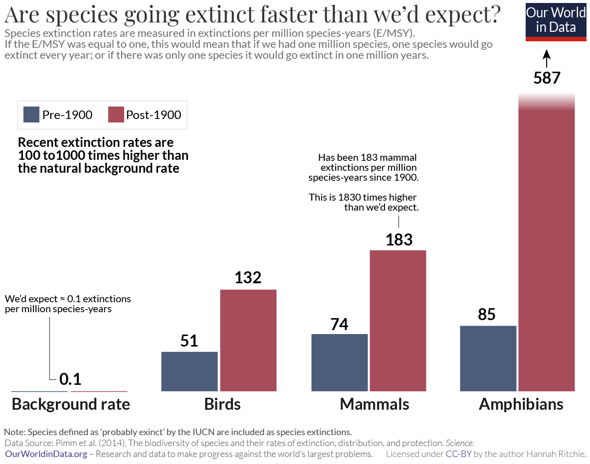
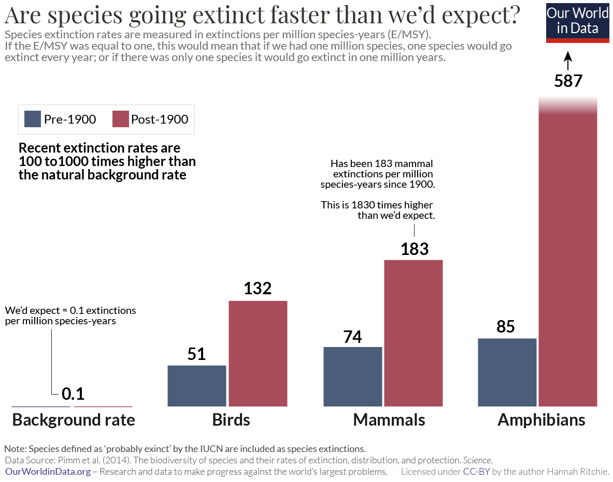

« Celui qui croit qu'une croissance exponentielle peut continuer indéfiniment dans un monde fini est
soit un fou, soit un économiste. » - Kenneth Ewart Boulding
« Le droit de toute forme de vie à vivre est un droit universel qui ne peut pas être quantifié. Aucune
espèce vivante n'a plus de ce droit particulier de vivre et de s'étendre qu'une autre espèce. »
« Tout individu vivant est, à égalité avec tout autre, digne de considération morale. »
« Une chose est juste lorsqu’elle tend à préserver l’intégrité, la stabilité et la beauté de la
communauté biotique. Elle est injuste lorsqu’elle tend à l’inverse » - A Sand County Almanac,
1949 Aldo Leopold
« Lorsque le dernier arbre aura été coupé, le dernier poisson pêché, la dernière rivière polluée,
alors l'homme blanc comprendra peut-être que l'argent ne se mange pas. » - Sitting Bull, chef
Indien. Il sera trop tard...
«La sagesse ne peut pas entrer dans un esprit méchant, et science sans conscience n’est que ruine de
l’âme. » - François Rabelais, citation tirée du livre «Pentagruel», 1532
« Primum non nocere », « D'abord ne pas nuire » - Principe premier du médecin, Hippocrate,
env. 410 av. J.-C.
When Science reach Respect Life Harmony
Les partisans de l'écologie profonde estiment que le monde n'est pas une ressource
exploitable à volonté par l'Homme. L'éthique de
l'écologie
profonde explique qu'un système global (la nature) est supérieur à
chacune de
ses
parties (l'Homme étant une partie de la nature). Cette éthique s'appuie
sur
les
huit postulats suivants:
Le bien-être et l'épanouissement des formes de vie humaines et non-humaines
de la
Terre ont une valeur en elles-mêmes (synonyme : valeur intrinsèque, valeur
inhérente). Ces valeurs sont indépendantes de l'utilité du monde
non-humain
pour les besoins humains.
La richesse et la diversité des formes de vie contribuent à la réalisation
de
ces
valeurs et sont également des valeurs elles-mêmes.
L'Homme n'a pas le droit de réduire la richesse et la diversité
biologique,
sauf pour satisfaire des besoins humains vitaux.
L'épanouissement de la vie et des cultures humaines est compatible avec une décroissance substantielle
de
la
population humaine. Le développement des formes de vie non-humaines requiert une telle
diminution.
L'interférence humaine actuelle avec le monde non-humain est excessive et nuisible,
et
la
situation empire rapidement.
Des politiques doivent donc être changées. Ces politiques affectent les structures
économiques, technologiques, et idéologiques fondamentales. Il en résultera
une
société profondément différente de la nôtre.
Les changements idéologiques passent par l'appréciation d'une bonne
qualité de vie plutôt que l'adhésion à des standards de vie
toujours
plus élevés. Il faut prendre conscience de la différence entre
« bonne
qualité » et « course à un niveau de vie extrêmement
élevé » (qui serait néfaste à la nature).
Ceux qui souscrivent aux points précédents s'engagent à essayer de
mettre
en
application directement ou indirectement les changements nécessaires.
Datas of a Planetary challenge (sources: US NOAA, UK Met Office)
Climate
Biodiversity collapse: Sixth Mass Extinction ?
"La vitesse de disparition des espèces est 100 fois plus rapide que la normale" - Isabelle
Autissier, ingénieure agronome et présidente d'honneur du WWF France
- Rendre définitivement compatible un développement humain de qualité avec
un accroissement
qualitatif &
quantitatif biodiversité / biomasse
- via des techniques écologiques, puis de la recherche
appliquée, puis de la recherche
- via la valorisation systématique du milieu naturel et de sa
biologie (économie symbiotique, bio/blue-economy, économie de la connaissance, de l'usage etc...)
- vise l'autosuffisance systématique et l'approche systémique/holistique circulaire
- a vocation d'être un incubateur d'idées pour une vie durable et de qualité, un
projet-pilote, un lab expérimental
- remettre véritablement de l'humain au coeur, aspect social et sociétal comme partie
intégrante du projet, coopératif, nouvelles approches éducatives
- pratique délibérée et amélioration progressive toujours en tête
- créer une dynamique transversale et pluridisciplinaire
- du fun !!
- réplication virale (blockchain ?)
- le sérieux doit changer de camp !
Key words:
- éco/bio-compatibilité
- éthique de l'environnement (écocentrisme, écologie profonde, deep ecology)
Aptitude
de la matière vivante seule à maintenir un état stable pendant un
certain laps de temps. C'est
l'entropie négative.
Elle se définit par conséquent comme un facteur d'organisation des
systèmes physiques, biologiques, et éventuellement sociaux et humains,
qui s'oppose à la tendance naturelle à la désorganisation (entropie).
Société Néguentropique, de l'entropie à la néguentropie (Bernard
Stiegler, philosophe):
Hypothèse Gaïa (i.e hypothèse biogéochimique:
Il s'agit d'une hypothèse
controversée,
mais intéressante, initialement avancée en 1970 par
le climatologue anglais James
Lovelock en collaboration
avec la microbiologiste
américaine Lynn Margulis, mais
également évoquée par d'autres scientifiques avant eux, selon laquelle
la Terre serait « un
système physiologique dynamique qui inclut la biosphère et
maintient notre planète depuis plus de trois milliards d'années en
harmonie avec la vie »3.
L'ensemble
des êtres
vivants sur Terre formerait
ainsi un vaste super
organisme — appelé
« Gaïa », d'après le nom de
la
déesse de la mythologie grecque personnifiant
la Terre — réalisant l'autorégulation de ses composants pour
favoriser la vie. Un exemple cité par Lovelock à l'appui de son
hypothèse est la composition de l'atmosphère, qui
aurait été régulée au cours du temps de manière à permettre le
développement et le maintien de la vie.
L'hypothèse
Gaïa est développée par James Lovelock dans
plusieurs ouvrages : Les
Âges de Gaïa (1990), La
Terre est un être vivant, l'hypothèse
Gaïa (1999), Gaïa. Une
médecine pour la planète (2001)
et La
Revanche de Gaïa (2006) ;
cet ouvrage brosse le tableau d'une planète devenue inhabitable pour l'homme.
D'autres scientifiques, comme Lynn Margulis, reprennent
l'hypothèse Gaïa, qui, depuis les travaux de Lovelock, a fait l'objet
d'une abondante littérature scientifique et philosophique. Du modèle géobiochimique est née la
géophysiologie qui, dans la continuité de l'hypothèse Gaïa, propose
d'étudier toutes les interactions existantes au sein du système-Terre.
Biosphère:
La biosphère est
l'ensemble des organismes vivants et leurs milieux de vie, donc la
totalité des écosystèmes présents
que ce soit dans la lithosphère, l'hydrosphère et
l'atmosphère.
Biotope:
En écologie, un
biotope est,
littéralement en grec ancien, un type de lieu
de vie défini par des
caractéristiques physiques et chimiques déterminées relativement
uniformes. Ce milieu héberge un ensemble de formes de vie composant la biocénose : flore, faune, fonge (champignons),
et des populations de micro-organismes.
Biocénose:
En écologie, la
biocénose (ou
biocœnose) est l'ensemble des êtres
vivants coexistant
dans un espace écologique donné, plus leurs organisations et interactions.
Ensemble, le biotope et
la biocénose forment un écosystème.
Au
sein de la biocénose, les écologues distinguent
couramment :
Les terres agricoles cultivées
constituent un écosystème particulier :
l'agroécosystème ;
on parle aussi d’agrobiocénose pour
désigner la biocénose d'une telle zone.
Biodiversité:
La biodiversité désigne
la variété des formes de vie
sur
la Terre.
Ce terme est composé du préfixe bio
(du
grec βίος « vie ») et du mot
« diversité ». Elle s'apprécie en considérant la
diversité des écosystèmes,
des espèces
et
des gènes
dans
l'espace et dans le temps, ainsi que les interactions
au
sein de ces niveaux d'organisation et entre eux. Lorsque la science
cherche
à évaluer
la
biodiversité d'un lieu particulier, les différents éléments des listes
d'espèces, écosystèmes ou gènes sont pondérés en fonction de leur
rareté.
En 2019, le nombre
d'espèces menacées d'extinction est évalué à un million.
Services écosystémiques:
Les écosystèmes
procurent
de nombreux services dits services
écologiques ou services écosystémiques. Certains
étant vitaux pour de nombreuses espèces ou groupes d'espèces (comme
la pollinisation),
ils sont généralement classés comme bien
commun et/ou bien
public.
S'il fallait chiffrer, en bon économiste néo-libéral, la valeur de ces services rendus par la Nature:
Selon une étude,
la valeur de l'activité pollinisatrice des insectes (abeilles surtout)
a été d'environ 153 milliards d'euros en 2005, rien qu'en considérant
les principales cultures dont l'homme se nourrit. La valeur de ce
service « gratuitement » rendu par la biodiversité
correspond à 9,5 % de la valeur de toute la production
alimentaire de la planète. D'autres estiment que les services
globalement rendus par la biodiversité (alimentation et fourniture
renouvelée d'oxygène en particulier) tendent simplement vers l'infini.
De nombreuses études ont porté sur la valeur des services rendus par la
biodiversité ou les zones humides pour l'eau potable et le cycle de
l'eau, par exemple pour le marais de Guînes.
Citons également, une étude menée
en 2009 par des économistes d'Irstea sur
les méthodes d'évaluation économique de la biodiversité dans les forêts
tempérées qui a fait l’objet de la rédaction d'un guide à
destination des gestionnaires forestiers. En 2014, Costanza et al.
estiment la valeur de 17 services écosystémiques à l'échelle mondiale
entre 125 000 et 145 000 milliards de
dollars (pour un PNB
mondial
de 60 000 milliards de dollars).
En 2018, le Rapport Planète Vivante estime la valeur des services
rendus par la nature pour l'air, l'eau et l’alimentation à 125 000
milliards de dollars par an, soit davantage que le PIB
mondial (80 000 milliards par an).
Capacité de charge:
La capacité porteuse (aussi appelée capacité
de charge, capacité limite, capacité de soutien, capacité biotique
ainsi que capacité de support au Québec et
carrying capacity en anglais) en écologie est
la taille maximale de la population d’un
organisme qu’un milieu donné
peut supporter. La
simplicité de cette définition toutefois cache la complexité réelle du
concept et de son application.
Ecologie profonde: (i.e "deep ecology")
L’écologie
profonde est une philosophie écologiste contemporaine qui se
caractérise par la défense de la valeur intrinsèque des êtres vivants
et de la nature, c’est-à-dire une valeur indépendante de leur utilité
pour les êtres humains.
Elle
attribue plus de valeur aux espèces et aux différents écosystèmes que
ne le font les mouvements écologiques classiques, ce qui entraîne le
développement d’une éthique
environnementale.
Tandis que l’écologie classique, bien que développant de nouvelles
alternatives, pose toujours la satisfaction des besoins humains comme
finalité (anthropocentrisme) et
attribue au reste du vivant le statut de « ressource », l’écologie
profonde ré-inscrit les finalités humaines dans une perspective plus
large, celle du vivant (biocentrisme) afin de prendre
en compte les besoins de l’ensemble de la biosphère, notamment
des espèces
avec lesquelles la lignée humaine coévolue depuis des milliers d’années.
Éthique environnementale:
cf. Les éthiques environnementales, 2010, Catherine Larrère, sur CAIRN.info
ou une analyse critique sur memoire-online
Trois courants existent:
biocentrisme, élargissement de la
valeur morale à toute forme de vie (biocénose)
écocentrisme, élargissement aux
milieux de vie de surcroît (biocénose + biotope):
= égalitarisme biosphérique (biospheric
egalitarianism) selon lequel les espèces, les
communautés,les écosystèmes ont une valeur intrinsèque
pragmatisme
Droits de la Nature (& Antagonsime Nature/Culture en Occident):
La civilisation occidentale étant la seule à séparer nature et culture,
il convient d'acorder des droits à la nature, ce qui constitue un
concept relativement récent. Il résulte de la conscience des dégâts
provoqués par l'homme à la nature. Vu la dégradation du biotope, et
aussi pour des raisons éthiques, des instances en Occident, à tous les
niveaux (ONU, Union européenne, nations européennes), se préoccupent
d’accorder des droits à la nature. L’étendue de ces droits fait
discussion. Le débat porte sur la priorité à accorder, soit à la nature
soit à l’homme. Des positions se situent entre ces deux extrêmes.
Dans
la civilisation occidentale, nature s'oppose à culture. En effet, le
Petit Robert définit la culture comme « l’ensemble des aspects
intellectuels propres à une civilisation ».
Dans son sens philosophique culture
désigne
« ce qui est différent de la nature ». Descola précise
« Est culturel ce qui est produit par l’action humaine, est
naturel ce qui se produit indépendamment de l’action humaine ».
L’opposition entre nature et culture qui se retrouve dans la
civilisation occidentale ne se retrouve pas forcément dans les autres
civilisations.
Fabrice Flipo souligne
que la civilisation occidentale est étroitement imbriquée dans la
nature, mais une nature minérale: celle des sous-sols. Les vastes cités
et le béton témoignent géographiquement de cette séparation. La
civilisation des sous-sols se construit sur la base d'une ontologie
cartésienne, avec d'un côté les sujets qui pensent (res cogitans, les
humains) et de l'autre la matière étendue (res extensa). La matière
souterraine extraite des sols est manipulée par les sciences de
l'ingénieur au sens large. La "crise écologique" émerge quand les
prélèvements directs ou les effets inintentionnels (changements
climatiques) sur les écosystèmes provoquent des inquiétudes, des
mouvements et des conflits. Une conception spécifique de la nature
émerge alors, ancrée dans cette situation particulière. Les peuples qui
vivent dans les forêts ont évidemment un concept de nature très
différent.
Dans le même livre Flipo souligne trois sens du
concept de nature : 1/ la nature comme désignant l'essence de
quelque chose, comme ce qui les définit (il est dans la nature des
oiseaux de voler etc. - l'essence peut être ascrite de manière
aliénante, par exemple dans le cas du racisme, par exemple quand James
Watson affirme que les noirs sont moins intelligents que les blancs,
sur la base de quelques tests)
2/ la nature comme ce qui se produit indépendamment de l'action humaine
(la biosphère, le vivant, mais aussi le cosmos, le big bang, la
tectonique des plaques, la fusion nucléaire dans le Soleil etc. - la
nature recouvre dans ce cas toutes les formes d'action non-humaines, et
non pas exclusivement celles du vivant) 3/ une action en tant qu'elle
est habituelle (par exemple l'entraînement rend certaines pratiques
naturelles).
Flipo affirme que le concept occidental de nature
dépend très largement des enjeux politiques liés à ces civilisations,
qui sont pluriels : c'est une nature saisie par l'écologie,
une science qui s'intéresse aux populations, à la génétique ;
une nature-wilderness, vierge, livrée à la contemplation paysagère, aux
réserves de biodiversité ou aux activités sportives ; une
nature sous-sol, liée aux activités extractives qui engendrent des
déplacements colossaux de matière, pour n'en citer que quelques-uns.
Philippe Descola estime
que la question du rapport des humains à la nature sera très
probablement la plus cruciale du présent siècle.
Le
droit participe à cette évolution aux côtés de la politique, des
sciences et des philosophies. La proposition d’accorder la personnalité
juridique à la nature ou à ses éléments représenterait une rupture avec
les anciennes manières de voir.
La prise en compte de la nature dans les décisions juridiques est déjà
une réalité.
Déclaration Universelle des droits de la Terre-Mère:
Les
dégradations de la Terre-Mère mettent en danger les écosystèmes, les
cycles écologiques et la pérennité d’espèces. L’exploitation abusive de
la Terre-Mère et les pollutions, inhérentes au système capitaliste,
entraînent des changements climatiques qui menacent la vie.
L’intégrité de la Terre-Mère
La
Terre-Mère est une communauté indivisible et autorégulée de tous les
êtres qui la composent.
Ceux-ci doivent donc être protégés sans distinction fondée sur leur
utilité pour les êtres humains. Cette protection nécessite de leur
conférer des droits.
Droits et devoirs
La recherche du bien-être humain ne doit pas nuire au bien-être de la
Terre-Mère, actuel ou futur. Les États et les institutions publiques et
privées ont le devoir de mettre en application ces principes. Les
pratiques respectueuses de la Terre-Mère, issues de cultures,
traditions et coutumes qui reconnaissent ces droits, doivent être
encouragées.
Bien commun:
Le bien
commun est une notion développée d'abord par la théologie et
la philosophie, puis saisie par le droit, les sciences sociales et
invoquée par de nombreux acteurs politiques. Elle désigne l'idée d'un
bien patrimonial partagé par les membres d'une communauté, au sens
spirituel et moral du mot « bien », de même qu'au
sens matériel et pratique (ce dont on dispose ou ce qu'on possède).
En Occident,
la philosophie s'interroge
au moins depuis Platon et Aristote1 sur
ce qui nous constitue en tant que communauté. Le concept de bien commun
figure dans la théologie chrétienne à partir de Thomas
d'Aquin, au xiiie siècle,
où il désigne l'inclination naturelle de la Création
dans
son ensemble (dont la communauté humaine) vers le Bien qui est Dieu2.
Dans une perspective chrétienne, la recherche du bien commun est alors
le fondement de toute organisation sociale et politique3.
Cette notion est souvent utilisée pour les questions relatives à
la propriété de
certaines ressources et désigne la relation entre l'accès à des
ressources équitablement partagées et des intérêts qui soudent les
membres d'une communauté et contribuent à son existence.
Pour le politologue
et économiste italien Riccardo
Petrella, le bien commun est ce qui fait vivre les sociétés4.
Selon l'économiste français Jean-Marie
Harribey (2011)5,
cette notion, qui met aussi en jeu celle de propriété,
serait notamment liée à la prise de conscience progressive de
l'existence d'un patrimoine commun de l'humanité.
Dans le langage
courant, le bien commun a souvent un sens moins spirituel, mais
correspond toujours à l'idée d'un patrimoine matériel ou immatériel de
la communauté humaine (parfois élargi aux autres espèces vivantes)
nécessaire à la vie, au bonheur ou à un épanouissement collectif.
Biocentrisme:
Le biocentrisme (grec :
βίος, bio,
« vie » ; et κέντρον, kentron,
« centre ») est un courant de l'éthique environnementale,
pensée pour l'essentiel d'origine norvégienne. Arne
Naess peut
être considéré comme le tenant de ce courant qui est introduit en
France par Catherine Larrère (Du
bon usage de la nature, 1997). Aux États-Unis, il est
représenté, entre autres, par Paul Taylor.
Associé
en France à la deep
ecology ou
écologie profonde,
le biocentrisme généralise l'approche kantienne à tous les êtres
vivants. Ces derniers doivent être considérés comme des fins en soi,
c'est-à-dire comme possédant une valeur intrinsèque qui leur donne
droit au respect.
Selon lui, tous les êtres vivants peuvent
être des fins en soi parce qu'ils :
développent des stratégies qui leur
permettent de se valoriser eux-mêmes, de se maintenir dans l'existence
sans autre but que cette existence elle-même. Il existe donc un vouloir-vivre universel
qui incite au respect
sont capables d'attribuer des valeurs
positives ou négatives aux choses, de leur conférer une valeur, ainsi
la plante aime le soleil.
Ecocentrisme:
Courant
de l'étique environnementale introduit par Aldo Leopold puis précisé
par John Baird Callico
tt,
il élargit le domaine moral jusqu'aux éléments non vivants de la
nature,c'est-à-dire un égalitarisme biosphérique
(biosphericegalitarianism) selon lequel les espèces, les
communautés,les écosystèmes ont une valeur intrinsèque, parce
qu'ilssont une matrice des organismes. De ce fait, les communautés,
lesécosystèmes doivent être protégés dans leurintégrité. L'homme fait
partie de la communauté biotique,les plantes et les animaux sont ses
compagnons. D'où lanécessité d'un partenariat (stewardship) avec la
nature.
L'écocentrisme est une
éthiqueconséquentialiste où le critère d'appréciation d'unacte est la
conséquence de cet acte sur l'écosystème, lacommunauté, l'espèce. Le
principe fondamentale del'éthique écocentrique, tel que l'énonçait
AldoLEOPOLD est qu' « une chose est juste lorsqu'elle tend àpréserver
l'intégrité, la stabilité et labeauté de la communauté bioéthique et
qu'elle est injustelorsqu'elle tend à autre chose »40 .L'écocentrisme
évoque l'idée de la valeursystémique étant donné que les éléments dela
nature sont liés les uns aux autres dans un système.
Dans son article intitulé la
valeur de lanature, Rolston III démontre en long et en large
l'existence de lavaleur systémique dans la nature. Selon ce dernier, la
valeursystémique est fondamentale. Ainsi dit-il, « les valeurs
sontintrinsèques, instrumentales et systémiques, et les trois
sontentrelacées, aucune ne pouvant se voir reconnaître une
importanceprioritaire par rapport aux deux autres, bien que la valeur
systémiquesoit fondamentale ».
Selon ce mouvement, notamment défendu par Vandana
Shiva qui
a fondé en Inde dans
l'Uttarakhand un
sanctuaire de la biodiversité sauvage et agrosemencière, où les femmes
tiennent une place essentielle,
il existe des similitudes et des causes communes aux comportements de
domination et d’oppression des femmes et aux comportements de
non-respect de la nature,
qui contribuent au saccage environnemental.
Actuellement, dans l'écoféminisme ou plutôt les
écoféminismes se dégagent plusieurs tendances :
un écoféminisme éthique (nouvelle éthique environnementale et
visant à soigner les blessures faites par l'homme à la planète («
care »)
dans
un monde perçu comme de plus en plus vulnérable (effondrement de la
biodiversité, crise climatique...). L'un des thèmes de cette mouvance
peut être la promotion d'un droit
de
la nature et
d'un droit
des animaux
;
un écoféminisme de résistance (le Staying
Alive de Vandana Shiva )
et de création ;
un écoféminisme faisant référence à une écologie
dite profonde,
et aux mythes fondateurs de la terre mère, à une planète symbiotique ou
à l'hypothèse Gaïa,
ou encore à un paradis perdu à réinventer;
un écoféminisme matérialiste (Maria Mies,
des économistes allemandes comme Claudia von Werlhof, Veronika
Bennholdt-Thomsen...).
Un exemple de fable écoféministe est donné dans le
personnage de Vikka, luttant contre le patriarcat, la hiérarchie, la
bestialité et les forces de police ; dans « la
Magie d'Hénok » de
Hiramash, Vikka n'est ni homme, ni dieu mais un être qui s'est battu
contre l'adversité et la soumission à quoi que ce soit y compris
l'Amour, et qui se retrouve chargé de rétablir l'équilibre entre hommes et femmes sur
Terre.
"Un modèle économique
régénératif radicalement nouveau qui affirme la possibilité de
développer une relation symbiotique (c.a.d de croissance mutuelle)
entre des écosystèmes naturels prospères et une activité humaine
intense, et ce dans tous les domaines de l'économie." - https://fr.symbiotique.org/fr/
Bioéconomie:
Le
mot bioéconomie aurait été créé vers 1925 par
le biologiste russe T.I. Baranoff. Depuis, il désigne plusieurs
théories et pratiques : approche économique des comportements
biologiques (comme l'entendait initialement Baranoff) ;
gestion des ressources halieutiques commerciales (à la suite des
travaux de H. Scott Gordon)... ou plus largement aujourd'hui la somme
des activités fondées sur les bio-ressources (produits
des vies terrestre ou marine, végétale, fongique, animale, bactérienne,
etc.).
En France, présentée en conseil des
Ministres le 18 janvier 2017, une Stratégie
Bioéconomie doit faire
passer l'économie d'une économie dépendante des ressources fossiles à
une économie basée sur la biomasse, c'est-à-dire basée sur un
carbone cycliquement et
des ressources renouvelables (de la production à la transformation,
jusqu’à la valorisation des co-produits et des biodéchets) et se veut
source de sécurité alimentaire.
Une Stratégie
nationale de mobilisation de la biomasse (SNMB)
vise à mieux connaitre et mobiliser cette ressource, sans la
surexploiter et en respectant ses autres usages (alimentaires notamment).
Au milieu des années
1970 Nicholas
Georgescu-Roegen promeut
ce terme pour désigner sa conception du processus économique. Il le
percevait comme une extension de l'évolution biologique des communautés
humaines. Et il proposait une réforme de la pensée économique ayant
deux dimensions : 1) sur le plan épistémologique, il
suggère que la biologie et
la thermodynamique sont
des référents scientifiques plus adaptés à l'économie que la mécanique rationnelle qui
a inspiré la théorie néoclassique ;
2) du point de vue environnemental, il met en avant les
interdépendances entre économie et Nature, et donc l'existence de
contraintes naturelles pesant sur l'activité économique. Cette
bio-économie entend donc rapprocher l'économie et
l'écologie, ce
qui en
fait l'une
des sources du courant de l'économie écologique.
En 1971 dans
« The
Entropy Law and the Economic Process »,
son ouvrage le plus important,
Georgescu-Roegen pose les bases de son approche bioéconomique, mais
n'utilise le mot « bioéconomie » qu'à partir de 1975,
celui-ci lui ayant été suggéré par un philosophe roumain du nom de Jiri
Zeman. Il postule
que l'activité économique est une continuation de l'activité biologique
humaine, en s'appuyant sur le livre Le
Hasard d'Emile Borel qu'il
a lu, étudiant à Paris, puis sur le livre d'Erwin Schrödinger Qu'est-ce
que la vie ?, abondamment cité dans ses travaux. La thermodynamique
rend
compte selon lui de l'interaction entre les processus biologiques ou
économiques, et l'environnement matériel. Le concept d' entropie lui
semble crucial pour comprendre la nature du processus économique. En
stipulant que l'entropie d'un système fermé ne peut que croître, la seconde loi
de la thermodynamique révèle
la dimension irréversible du processus économique qui tend à dissiper
les ressources matérielles et énergétiques sur lesquelles se fonde la
prospérité des sociétés modernes.
Pour Georgescu-Roegen
les économistes néoclassiques ont omis cette dimension car leur théorie
est inspirée de la mécanique rationnelle, idée que Philip Mirowski
développera dans son ouvrage Plus
de chaleur que de lumière en
rendant hommage à Georgescu-Roegen pour avoir ouvert la voie à cette
analyse. Or la
mécanique s'oppose frontalement à la thermodynamique sur le plan
épistémologique, en ce qu'elle ne décrit que des phénomènes
réversibles, ce que Georgescu-Roegen juge impropre dans le cas de
l'économie. De même, il accuse l'épistémologie mécaniste de se
focaliser sur les transformations quantitatives en oubliant les
dimensions qualitatives qui affectent le processus économique.
La critique
épistémologique de la théorie néoclassique faite par Georgescu-Roegen
est relativement originale à l'époque. Propre à saper les fondations
même de la l'économie standard, elle est populaire dans les courants
hétérodoxes, notamment de l'économie écologique.
La défense d'une
méthodologie apte à rendre compte des transformations qualitatives
s'appuie sur le second pilier de la bioéconomie : la biologie.
Georgescu-Roegen reconnaît là l'influence de Joseph
Schumpeter, qui
l'a initié à l'économie à son arrivée aux États-Unis dans les années
1930.
Il en retient la description de l'impact des innovations sur
le processus économique, dans laquelle apparaît clairement le parallèle
avec le rôle des mutations dans
l'évolution biologique.
En particulier cette approche insiste sur le fait qu'il ne s'agit pas
seulement de transformations quantitatives des flux de matières et
d'énergie, mais bien de transformations qualitatives des processus de
production.
Si on perçoit ainsi une continuité entre l'évolution biologique et
l'évolution économique, il convient de préciser ce qui les distingue.
Pour ce faire Georgescu-Roegen emprunte à Alfred
Lotka la
distinction entre instruments endosomatiques,
dont l'organisme est doté à la naissance, et exosomatiques (extérieurs
au corps). une spécificité humaine parmi les autres espèces est que son
évolution porte avant tout sur les derniers, le processus économique
ayant de plus en plus pour fonction de les maintenir en état, tout
comme l'activité biologique consiste à préserver l'organisme autrement
soumis à la dégradation entropique.
Ayant ainsi ancré
l'activité économique dans ses dimensions thermodynamique et
biologique, il envisage les aspects sociaux dans la continuité de ces
dernières. Il y voit en effet la source du conflit social.
Ce dernier naît de la rareté radicale dont la seconde loi de l'entropie
rend compte, car les ressources de basse entropie constituent le
fondement de toute prospérité économique. Mais ce qui donne l'intensité
du conflit social propre aux sociétés humaines c'est la prévalence des
instruments exosomatiques dans l'organisation sociale. Dans les
communautés d'insectes sociaux, tels que les abeilles ou les fourmis,
où la production est organisée collectivement, on n'observe pas un
telle lutte sociale car l'individu est entièrement déterminé par ses
organes endosomatiques dont il ne saurait se détacher ou acquérir de
nouveaux. Au contraire chaque humain peut prétendre à la détention de
tous les instruments exosomatiques qui deviennent l'objet du conflit et
le critère des hiérarchies sociales.
Cette perspective
l'amène à poser un regard particulier sur les inégalités entre nations
et la question du sous-développement qui est une préoccupation
importante de l'après Seconde-Guerre
mondiale. Les différents niveaux de développement sont pour
lui révélateurs de l'existence d'une multiplicité « d'espèces
exosomatiques ». Il suggère ainsi que le problème du
sous-développement ne peut être simplement résolu par des transferts
technologiques, car l'adaptation d'une société à une technologie donnée
représente une transformation qualitative qui modifie en profondeur les
institutions.
Une autre conséquence de l'évolution exosomatique réside dans la
dépendance accrue à l'égard des ressources minérales qu'elle entraîne.
À ce propos Georgescu-Roegen juge que la thermodynamique a jusque-là
injustement négligé la matière au profit de l'énergie. Or pour lui la
matière aussi est soumise à une dégradation irrévocable que l'activité
économique moderne accélère considérablement, acheminant l'humanité
vers un état où les ressources seront trop diffuses à la surface du
globe pour que l'activité économique puisse se poursuivre. Il en
viendra même à proposer un 4e principe
de la thermodynamique qui puisse rendre compte de ce constat. L'une de
ses conséquences immédiates serait que le recyclage ne peut jamais être
total.
Si cette proposition de Georgescu-Roegen est l'une des plus
controversées sur le plan strictement théorique, on s'accorde en
général à admettre qu'elle a une pertinence dans le domaine pratique et
soulève ainsi une question importante pour la soutenabilité de
l'activité économique à long terme .
Si le rôle joué par les ressources énergétiques dans les économies
modernes a été marginalisé par l'économie en général, et la théorie
économique néoclassique en particulier,
ce constat est encore plus vrai en ce qui concerne les ressources
minérales, notamment les métaux. De ce point de vue, les préoccupations
de Georgescu-Roegen sont uniques dans le champ économique de l'époque,
mais elles sont reçues favorablement par certains géologues.
Georgescu-Roegen n'a
jamais publié de synthèse de son projet bioéconomique. Si The
Entropy Law and the Economic Process posait
les bases de la réflexion épistémologique sous-jacente, l'évolution de
la pensée de Georgescu-Roegen dans le courant des années 1970 appelait
un nouvel ouvrage qui précise les fondements et les outils de la
bioéconomie. Un tel ouvrage, du nom de Bioeconomics,
est vraisemblablement envisagé par l'auteur dès 1976.
Il y travaille durant son séjour en Europe à la fin des années 1970. Il
est encore d'actualité au début des années 1980, l'éditeur pressenti,
Princeton University Press, faisant part de son enthousiasme pour le
projet. Mais en définitive il ne verra jamais le jour, alors qu'il
aurait probablement rendu plus aisée la diffusion de la perspective
bioéconomique. Néanmoins cette dernière ne sera pas sans héritage.
L'influence de René Passet en France
L'économie
écologique, bien qu'ayant son centre de gravité aux États-Unis, s'est
aussi répandue en Europe, comme l'attestent les travaux de Juan
Martinez-Alier ou de Inge Ropke. En France cependant son écho est
encore faible et la connaissance des travaux de Georgescu-Roegen a été
principalement rendue possible par les traductions de Jacques
Grinevald et Ivo
Rens. Mais on
note aussi avec intérêt qu'une école française de la bioéconomie a vu
le jour autour des travaux de René
Passet. Ce
dernier,
professeur d'économie à l'université Paris 1 de 1968 à 1995,
s'intéresse tôt aux questions environnementales du fait de sa
spécialisation en économie du développement. Dans le courant des années
1970, il écrit une série d'articles qui cherchent à promouvoir une
nouvelle conception de la science économique, le tout culminant avec
son ouvrage L'économique et
le vivant en 1979. Son
projet s'inscrit volontairement dans la continuité de celui de
Georgescu-Roegen dont il reprend le terme de bioéconomie et qu'il
qualifie de « grand précurseur » . Il en
retient ainsi l'idée centrale d'une activité économique conçue comme
continuation de l'activité biologique, et les nouveaux référents
scientifiques que sont la thermodynamique et la biologie
évolutionniste. Il adhère à la vision d'une économie ayant pour but de
rechercher les conditions de la reproduction de la vie humaine sur
Terre, plutôt que celles de la maximisation du bien-être.
Mais il perçoit des
faiblesses dans les propositions de ce précurseur, et L'économique
et le vivant est en somme
une tentative de dépassement. Selon lui Georgescu-Roegen n'a pas poussé
assez loin la réflexion qui s'ouvre lorsqu'on considère que la Terre
est thermodynamiquement un système clos, c'est-à-dire n'échangeant
(presque) pas de matière avec son environnement mais recevant de
grandes quantités d'énergie via le rayonnement solaire. Ce statut
implique pour Passet que la vie sur Terre se transforme continuellement
sous l'effet de ce flux solaire, suivant un processus de
complexification imprévisible. S'inspirant d'Erwin Schrödinger, de
Joseph Schumpeter, mais aussi des travaux plus récents d'Ilya
Prigogine, il fonde son appréhension de l'évolution, tant biologique
qu'économique, sur le concept de « destruction
créatrice ». Il entend
par là le fait que tout processus qui crée de l'ordre dans la matière
entraîne globalement une dégradation entropique, mais que ce processus
est à la source du renouvellement des formes de la vie, qualifié de
« saut qualitatif ». Il conteste l'idée présente chez
Georgescu-Roegen selon laquelle le processus économique est un facteur
d'accélération de la dégradation entropique naturelle et développe une
vision plus positive où l'innovation technologique apparaît comme une
source potentielle d'atténuation de l'impact environnemental des
activités humaines.
L'un des traits
marquants de l'évolution contemporaine est selon Passet le
développement des structures informationnelles via l'informatique. Là
encore il conçoit ce phénomène dans sa nature bioéconomique, en le
mettant en rapport avec le rôle de l'information dans les organismes
vivants, par exemple sous la forme de l'ADN.
L'information y apparaît comme le principe de transmission des
propriétés structurelles de l'organisme considéré et constitue donc un
élément immatériel essentiel au processus de reproduction-mutation qui
caractérise l'épistémologie évolutionniste. De plus, à la suite des
travaux de Claude
Shannon sur
la théorie mathématique de la communication dans les années 1940, le
concept d'information a été mis en relation avec les grandeurs de la
thermodynamique. Il est parfois avancé que l'information permettrait
d'aller contre la dégradation entropique, ou encore qu'elle
constituerait une entropie négative (négentropie)* et
Passet semble adhérer à cette vision. Georgescu-Roegen pour sa part
critique vivement cette idée comme un mythe ayant pour but d'éviter de
se confronter à la signification réelle de la loi de l'entropie. De
manière générale, la vision du monde présentée par Passet est plus
optimiste que celle de Georgescu-Roegen, notamment vis-à-vis du rôle de
la technologie.
Il convient de
souligner que ces deux figures de la bioéconomie se retrouvent dans une
conception transdisciplinaire de l'économie. Passet consacre une partie
de ses travaux à défendre explicitement cet aspect, là où
cela reste plus succinct chez Georgescu-Roegen. Notons
que sociologiquement la pratique transdisciplinaire de Passet fait
beaucoup plus de place aux conversations avec les experts des
disciplines mobilisées. Cette pratique est en partie l'héritage de sa
participations aux rencontres du groupe des dix dans
les années 1970. Ce groupe informel a vu passer nombre de personnalités
scientifiques ou politiques, tels qu'Edgar Morin, Michel Serres,
Jacques Attali ou Michel Rocard. L'objectif initial du groupe était de
promouvoir une approche plus scientifique de la politique. Mais le
groupe est resté avant tout un lieu d'interactions entre des
scientifiques issus de différentes disciplines, telles que la biologie
et l'économie. Les réunions abordaient notamment des questions liées à
la théorie de l'information ou aux conséquences environnementales de la
croissance. Une rencontre avec les membres du Club de
Rome aura
lieu, mais elle ne débouchera pas sur une collaboration de long terme
du fait de divergences politiques importantes entre les deux groupes. Si Passet
était l'un de ceux qui stimulait l'intérêt du groupe pour les questions
économiques et environnementales, il est aussi clair que les échanges
avec les autres membres ont profondément marqué ses travaux ultérieurs,
comme il le reconnaît lui-même : « J'ai toujours eu
le sentiment que le Groupe des Dix avait constitué pour moi un tournant
décisif et que je ne voyais plus les choses de la même façon. ». Malgré
cette intégration à des milieux relativement prestigieux l’œuvre de
René Passet aura peu d'influence sur la science économique telle
qu'elle se pratique en France. À part Franck-Dominique Vivien, auteur
d'ouvrages tels que les deux « repères » Économie
et écologie et Le
développement soutenable, on trouve peu d'économistes qui se
revendiquent de son héritage.
Bioéconomie et décroissance:
Dans le contexte francophone,
les travaux bioéconomiques de Georgescu-Roegen sont fortement attachés
au courant politique de la décroissance. Ceci
est en partie dû à la traduction de plusieurs de ses articles par
Jacques Grinevald et Ivo Rens, qui paraissent en 1979 dans un recueil
intitulé Demain la
décroissance. Celle-ci apparaît a posteriori comme un acte
fondateur pour le mot même de décroissance . Depuis
cette date, les travaux de Georgescu-Roegen sont devenus l'une des
ressources théoriques des objecteurs de croissance et il est considéré
comme un « précurseur de la décroissance ». Son
influence transparaît principalement dans l'idée que la loi de
l'entropie constituerait une limite inflexible à la perpétuation des
activités économiques au rythme actuel, ne laissant d'autre choix que
la décroissance économique. C'est
donc avant toute chose la dimension thermodynamique du discours de
Georgescu-Roegen qui est mobilisé, sans considération pour les autres
aspects du projet bioéconomique. Par ailleurs, Georgescu-Roegen n'est
qu'une des références du courant de la décroissance, qui en compte bien
d'autres. Ainsi Serge
Latouche distingue
au sein de la décroissance une branche
« bio-économique », issue de Georgescu-Roegen et
représentée par Grinevald, et une branche
« anti-développement », issue des travaux d'Ivan
Illich et
à laquelle Latouche se rattache pour sa part. Ces
différents aspects amènent Antoine Missemer, dans son livre consacré à
la bioéconomie de Georgescu-Roegen, à suggérer que l'assimilation
courante de Georgescu-Roegen à la décroissance est trop étroite, et il
la qualifie de « malentendu historique ». Cette
suggestion a été mal accueillie par les objecteurs de croissance pour
qui elle est apparue comme une tentative de récupération de
Georgescu-Roegen en lui prêtant une proximité avec le développement durable plutôt
que la décroissanc.
Blue economy:
L'économie
bleue est un modèle
économique conçu par l’entrepreneur belge Gunter
Pauli qui
prétend suffire aux besoins de base en valorisant ce qui est disponible
localement et en s’inspirant du vivant.
Ce concept se base sur les principes de l’économie circulaire3
et
considère les déchets comme dotés de valeur.
La couleur bleue renvoie ici à celle du ciel et des océans pour
s’opposer à l’économie verte.
L'économie
bleue est la philosophie de Zeri´s en action. C'est là où le meilleur
pour la santé et l'environnement est le moins cher et les nécessités de
la vie sont gratuites grâce à un système local de production et de
consommation qui fonctionne avec ce que vous avez.
Modèles
d'affaires innovateurs
Les modèles d'affaires innovateurs sont capables de mettre sur le
marché des produits et des services concurrentiels répondant aux
besoins fondamentaux tout en développant le capital social et en
améliorant la vie en harmonie avec le chemin évolutif de la nature.
Compétitivité
La compétitivité, c'est l'exploitation et l'optimisation des vertus et
des valeurs innées qui relient les potentiels locaux inexploités -
comme un système naturel, où les graines ne restent en jachère que pour
germer avec une vigueur étonnante dès la première pluie, libérant joie
et bonheur alors que les conditions pour une vie mentale pleine sont
réunies en équilibre et en harmonie.
L'économie bleue répond aux besoins fondamentaux de tous avec ce que
vous avez, en introduisant des innovations inspirées par la nature,
générant de multiples bénéfices, y compris des emplois et du capital
social, offrant plus avec moins.
Les
solutions sont d'abord et avant tout basées sur la physique. Les
facteurs déterminants sont la pression et la température telles qu'on
les trouve sur le site.
Remplacer quelque chose par rien - Remettre en question toute ressource
concernant sa nécessité pour la production.
Les
systèmes naturels cascadent les nutriments, la matière et l'énergie -
les déchets n'existent pas. Tout sous-produit est la source d'un
nouveau produit.
La
nature est passée de quelques espèces à une riche biodiversité. La
richesse, c'est la diversité. La normalisation industrielle, c'est le
contraire.
La
nature offre de la place aux entrepreneurs qui font plus avec moins. La
nature est contraire à la monopolisation.
La
gravité est la principale source d'énergie, l'énergie solaire est le
deuxième carburant renouvelable.
L'eau
est le principal solvant (pas de catalyseurs complexes, chimiques et
toxiques).
Dans la
nature, la constante est le changement. Les innovations ont lieu à
chaque instant.
La
nature ne fonctionne qu'avec ce qui est disponible localement.
L'entreprise durable évolue dans le respect non seulement des
ressources locales, mais aussi de la culture et des traditions.
La
nature répond aux besoins de base et évolue ensuite de la suffisance à
l'abondance. Le modèle économique actuel repose sur la rareté comme
base de production et de consommation.
Les
systèmes naturels sont non linéaires.
Dans la
nature, tout est biodégradable - ce n'est qu'une question de temps.
Dans
les systèmes naturels, tout est connecté et évolue vers la symbiose.
Dans la
nature, l'eau, l'air et le sol sont les biens communs, libres et
abondants.
Dans la
nature, un processus génère de multiples avantages.
Les
systèmes naturels partagent les risques. Tout risque est un facteur de
motivation pour les innovations.
La
nature est efficace. Ainsi, les affaires durables maximisent
l'utilisation des matériaux et de l'énergie disponibles, ce qui réduit
le prix unitaire pour le consommateur.
La
nature recherche l'optimum pour tous les éléments involucrés.
Dans la
nature, les négatifs sont convertis en positifs. Les problèmes sont des
opportunités.
La
nature recherche des économies d'échelle. Une innovation naturelle
présente divers avantages pour tous.
Économie de la connaissance (Knowledge Economy):
L'économie du
savoir, l'économie de la connaissance, l'économie de
l'immatériel ou encore le capitalisme cognitif, est,
selon certains économistes, une nouvelle phase de l'histoire économique
qui aurait commencé dans les années
1990. Le concept est établi par Fritz
Machlup en 1962 par la publication de son
livre The
production and distribution of knowledge in the United States ;
sa thèse de 1977 montre que près de 45 % des employés
aux États-Unis manipulent
de l'information. Ces travaux sont repris dans une annexe d'un rapport
officiel français paru en 1978, L'Informatisation
de la société, rapport qui connait un succès médiatique sans
précédent sous le nom de ses auteurs Simon
Nora et Alain
Minc.
L’industrie de la
connaissance représente 29 % du PIB
aux
États-Unis en 1958 toujours d’après l’étude de Machlup (1962) et
34 %
en
1980 d’après celle de Rubin et Taylor1. Ce
type de travaux a été poursuivi par l’OCDE qui
regroupe, à l’intérieur des industries fondées sur le savoir, les
industries manufacturières de haute et de moyenne-haute technologie et
deux catégories de services : les services fournis à la
collectivité, sociaux et personnels et les activités de banque,
assurance et autres services aux entreprises. Les industries de la
connaissance représentent alors plus de 50 % du PIB
de
l’ensemble de la zone OCDE à
la fin de la décennie 1990 contre 45 %
en
1985 et connaissent une croissance supérieure au PIB
dans
la plupart des pays.
La mutation de
l'économie ainsi annoncée serait aussi celle d'un nouveau mode
de
régulation
du capitalisme. En
valorisant sur le plan marchand les connaissances, grâce à l'octroi de
plus en plus étendu de droits de propriété sur des savoirs ou de
l'information qui faisaient jusque-là partie des « biens
communs » : connaissance produite par les
professionnels du savoir (chercheurs, universitaires), des sociétés
traditionnelles où le droit de propriété intellectuelle n'existe pas ou
enfin de l'information disponible dans la nature (codes génétiques),
les sociétés « post-industrielles », notamment celles
de tradition anglo-saxonne, ouvrent de nouveaux espaces marchands
sources de croissance, mais également de rentes monopolistiques pour
les détenteurs de ces nouveaux droits.
Selon la fondation Ellen
MacArthur (créée
pour promouvoir l'économie circulaire,
il s'agit d'une économie industrielle qui est, à dessein ou par
intention, réparatrice et dans laquelle les flux de matières sont de
deux types bien séparés : les nutriments biologiques, destinés
à ré-entrer dans la biosphère en
toute sécurité, et les entrants techniques (« technical
nutrients »), conçus pour être recyclés
en restant à un haut niveau de qualité, sans entrer dans la biosphère.
L'économie circulaire
se veut plus « écologiquement vertueuse » que les
modèles économiques classiques qui basent le développement économique
sur une production de richesse
ou
de plus-value
se
traduisant par une destruction de ressources.
Elle promeut pour
cela un système économique et industriel d'une part sobre en carbone et en énergie et
d'autre part sobre en ressources naturelles pas,
peu, difficilement, lentement ou coûteusement renouvelables, fondé sur
l'écoconception
des
produits et services qui doit favoriser le recyclage au
meilleur coût.
Pour Arnaud
Gossement, spécialiste du droit de l'environnement,
malgré un travail et rapport du comité opérationnel français no 31
sur « l'économie de fonctionnalité » faisant à la
suite du Grenelle de l'environnement, « l'expression
« économie circulaire » n'est pas tout à fait
stabilisée » et l'expression ne figure pas dans la feuille de route pour la transition écologique écrite
pour mettre en œuvre la conférence
environnementale qui évoque
elle une « transition écologique de l'économie ».
En tant que théorie,
l'économie circulaire est compatible avec les théories de l'économie
de la frugalité ou de la décroissance ou
de la sobriété heureuse. Elle
semble cependant également compatible avec un modèle classique optimisé
et intégrant l'écoconception mais
reposant toujours sur le recyclage rapide d'objets rendus désuets par
la mode et la publicité ou par une obsolescence technique
programmée.
L'économie circulaire
présente entre autres deux enjeux environnementaux et économiques.
D'un premier côté,
l'enjeu est de pouvoir répondre à la problématique que posent l'obsolescence programmée des
produits et la croissance importante de la consommation mondiale de
matières premières. L'économie circulaire intervient dans
l'optimisation de l'utilisation
des
ressources limitées (dont le foncier) ou en voie de raréfaction
(quatorze minéraux ou métaux
dont
le béryllium,
le cobalt,
l’indium,
le magnésium,
les terres
rares et
le tungstène
sont
de plus en plus demandés par l'industrie,
ce qui peut être source de tensions sociopolitiques et d'inégalités).
Elle joue un rôle
nouveau dans la gestion des déchets et
du recyclage.
À cet égard l'économie circulaire est un modèle innovant qui a pour
objectif de rechercher l'efficience de l'économie des ressources.
Cela passe par le fait de donner une seconde vie aux produits et
notamment par des méthodes de réemploi, de réparation et de
réutilisation des matières premières.
D'un autre côté,
l'économie circulaire conduit aussi à des avantages économiques. Cette
méthode peut être facteur d'attractivité d'un
territoire et d'opportunité
d'emplois.
Le déploiement d'une économie circulaire permet de créer de nouvelles
activités notamment dans le secteur de l'écoconception, gestion des ressources naturelles et
des énergies renouvelables.
L'économie circulaire
permet également la sécurisation des approvisionnements. Elle permet
l'approvisionnement en ressources naturelles critiques,
de répondre à de nouveaux modes de consommation et de réduire les
coûts. Face à l'augmentation de la demande en ressources émanant de la
population, et pour faire face à la raréfaction des ressources,
certaines entreprises sécurisent leur approvisionnement en recyclant
leurs propres produits ou en collectant puis recyclant les déchets.
Pour répondre aux nouveaux modes de consommation, il existe la consommation collaborative.
48 % des Français pratiqueraient régulièrement la consommation
collaborative et 80 % d'entre eux compteraient la pratiquer.
Les opportunités de réduction des coûts sont la réduction de la
consommation des matières premières, la réduction du coût d'élimination
des déchets ou le prolongement de la durée de vie des produits.
Selon un rapport de McKinsey réalisé
pour la Fondation Ellen MacArthur,
l'économie circulaire permettrait aux entreprises d'économiser
annuellement, plus de 240 milliards de dollars en Europe, en
réduisant la consommation des matières premières.
La fondation Ellen
MacArthur, créée en 2010 avec un groupe de « partenaires
fondateurs » — B&Q,
BT
GroupCisco,
National
Grid et Renault —
pour inspirer un monde repensé et un avenir positif, a produit deux
rapports
sur
l'économie circulaire (associée à l'économie de la fonctionnalité) et
contribue à diffuser ce concept.
Le concept d'économie
circulaire est toutefois trompeur, selon les décroissants.
Il fait fi des considérations
exergétiques qui veulent
qu'à chaque étape, quelle qu'elle soit, il faille introduire derechef
de l'énergie dans le cycle. Par ailleurs, il est impossible d'empêcher
entièrement la dissémination des matériaux.
Le cycle théoriquement fermé s'avère en réalité pour partie ouvert.
Ainsi, à titre
d'exemple, parmi les plastiques, seuls les emballages dotés de la
mention PETE ou HDPE sont recyclables, en l'état actuel de la
technique. Il est de notoriété publique qu'ils peuvent servir à
fabriquer des vestes polaires. Ces dernières ne sauraient être
recyclées, car le plastique ne se recycle qu'une seule fois.
Ingénierie écologique:
Le génie
écologique regroupe un ensemble de techniques issues de l'
ingénierie classique
et de l'écologie
scientifique et
se définit par la finalité des actions menées, qui ont comme objectif
de contribuer à la résilience
de
l'écosystème.
L'association de l'ingénierie et de l'écologie vise à coopérer avec
le vivant,
à s'associer et à favoriser les processus naturels dans un but de
création, de restauration ou
de réhabilitation
de fonctions
assurées
par les milieux naturels. Ainsi, le génie écologique ne se définit pas
seulement à partir des techniques utilisées, « avec le
vivant », mais surtout par l'objectif visé par les travaux, « pour le vivant » :
le génie écologique contribue directement à préserver et développer
la biodiversité.
Ainsi,
le génie écologique cherche à optimiser les services
écosystémiques. Mais il peut aussi les recréer en les
intégrant dans un aménagement. Il s'appuie sur, et joue avec, les
processus naturels à l'œuvre dans les écosystèmes, à l'inverse
du génie
civil classique qui parfois doit lutter contre la
dynamique des écosystèmes. Le génie écologique peut alors s'associer au
génie civil et proposer des techniques alternatives en favorisant les
capacités de résilience écologique des écosystèmes et en valorisant les
facultés du vivant à façonner, améliorer, stabiliser, épurer certains
éléments du projet et du paysage : route, bâtiment, sols,
pentes, berges, lisières, écotones, zones humides4...
Chimie verte:
La chimie
verte, appelée aussi chimie
durable ou chimie
écologique ou chimie renouvelable, prévoit la mise en
œuvre de principes pour réduire et éliminer l'usage ou la génération de
substances néfastes pour l'environnement. Ceci doit se faire par de
nouveaux produits (agroressources,
ressources
renouvelables), procédés
chimiques et des voies de synthèses
« propres »,
c'est-à-dire respectueuses de l'environnement. Désormais, le
développement de la chimie
industrielle, issu des dérivéshydrocarburés
selon
un paradigme
hérité
du xxe siècle,
doit intégrer les objectifs que la gouvernance
environnementale a identifié dans ses aspects
économiques et de préservation de la santé
humaine.
Cela concerne notamment le nombre croissant de pathologies: maladie
d'Alzheimer, cancer, diabètes.
Le
génie
biologique désigne l'application des concepts et méthodes de
la biologie
(et
accessoirement de la physique,
chimie,
mathématiques
et informatique)
afin de résoudre les problèmes relatifs aux sciences
du vivant, en utilisant les méthodes
analytiques
et de synthèses propres à l'ingénierie
ainsi
que son expérience quant au coût et à la faisabilité d'une solution.
Dans cette optique, alors que l'ingénierie traditionnelle applique les
sciences physiques et mathématiques afin d'analyser, concevoir et
fabriquer des outils, des structures et des processus non-vivants, le
génie biologique utilise principalement le domaine des connaissances de
la biologie
moléculaire afin d'étudier et de promouvoir son
application aux organismes
vivants.
L'une
de ses applications majeures est l'analyse et la résolution économique
des problèmes liés à la santé humaine. Cependant, son champ
d'application est encore bien plus étendu, on peut citer par exemple
le biomimétisme,
cette branche de l'ingénierie biologique qui s'efforce de découvrir la
façon dont les structures et fonctions des organismes vivants peuvent
être utilisés comme modèles pour la conception et l'ingénierie de
matériaux et de machines. La biologie
des systèmes, d'autre part, cherche à utiliser la familiarité
de l'ingénieur avec des systèmes artificiels complexes, ainsi que les
concepts utilisés dans le reverse engineering,
afin de faciliter le processus de reconnaissance des structures, la
fonction et le fonctionnement précis de systèmes biologiques complexes.
La
différenciation entre génie biologique et génie
biomédical peut sembler confuse, car de nombreuses
universités utilisent souvent les termes
« bio-ingénierie » et « génie
biomédical » de façon interchangeable. Les ingénieurs
biomédicaux sont spécifiquement axés sur l'application de la biologie
et autres sciences aux innovations médicales, alors que les ingénieurs
biologistes se consacrent principalement à l'application de la
biologie, mais pas nécessairement à des usages médicaux. Les domaines
de l’ingénierie biologique et de l’ingénierie biomédicale ont une
intersection commune mais certains aspects sont disjoints, on peut par
exemple utiliser des produits « non-biologiques » à
des fins médicales ou des produits biologiques pour des applications
« non médicales ».
Biologie synthétique:
La biologie de synthèse, ou biologie
synthétique, est un domaine scientifique
et biotechnologique émergeant
qui combine biologie et
principes d'ingénierie,
dans le but de concevoir et construire
(« synthétiser ») de nouveaux systèmes et fonctions
biologiques, avec des applications notamment développées par les
secteurs agropharmaceutique, chimique, agricole et énergétique.
Bioéthique:
La bioéthique ou éthique
médicale est l'étude des problèmes éthiques
posés
par les avancées en matière de biologie et
de médecine.
C'est une partie de l'éthique
qui
est apparue en tant que « discipline »
nouvelle
dans le courant des années
1960, et lors d'interrogations au sujet du développement de
la biomédecine
et
des technosciences.
Attention !
Tout projet de bioingénierie / biologie synthétique doit être soumis au
principe de précaution, à la bioéthique, aux éthiques
environnementales, aux études d'impact, notamment études
écotoxicologiques !!
Phytoépuration:
La phytoépuration est
au sens large l'épuration par les plantes. Celles-ci peuvent contribuer
à épurer ou dépolluer les trois grands milieux que sont l'air, les sols
et l'eau.
Bioremédiation:
La bioremédiation consiste
en la décontamination
de
milieux pollués au moyen de techniques issues de la dégradation
chimique ou d'autres activités d'organismes vivants.
Ces
marchés sont en forte croissance, principalement du fait de
l'augmentation des prix du pétrole,
des obligations de recyclage
et
de respect de l'environnement.
Biomimétisme:
Le biomimétisme désigne
un processus d'innovation
et
une ingénierie.
Il s'inspire des formes, matières, propriétés, processus et fonctions
du vivant.
Il peut concerner des échelles nanométriques et biomoléculaires avec
par exemple l'ADN
et
l'ARN,
et jusqu'à des échelles macroscopiques et écosystémiques,
incluant donc les services
écosystémiques.
Il
cherche ainsi des solutions soutenables
produites
par la nature, sélectionnées par de nombreuses espèces, éprouvées par
l'évolution au sein de la biosphère1.
La biomimétique est
un processus créatif interdisciplinaire entre la biologie et la
technique, dont le but est de résoudre des problèmes anthropocentriques
par
l’abstraction, le transfert et l’application de connaissances issues de
modèles biologiques. Mettant au point des procédés et des organisations
permettant un développement durable des sociétés, le biomimétisme et la
biomimétique sont parfois confondus avec la bioinspiration,
cette dernière étant un concept plus générique puisqu'elle se définit
comme « une approche créative reposant sur l'observation des
systèmes biologiques ».
Le
biomimétisme est un domaine encore émergent de la recherche et des
domaines techniques, médicaux, industriels et de la bioéconomie,
incluant des sous-domaines tels que la bionique,
la bioassistance et l'architecture biomimétique3.
Certains auteurs y voient une voie nouvelle de développement soutenable
et intégré dans la biosphère4
permettant
de mettre au point des procédés et des organisations qui ouvrent la
possibilité d'un développement durable des sociétés.
Architecture bioclimatique:
L'architecture
bioclimatique est une discipline
de
l'architecture
dont
l'objectif est de tirer parti des conditions d'un site et de
son environnement.
L'architecture
dite bioclimatique accorde une
place prépondérante aux conditions du site et de l'environnement comme
le climat,
le microclimat,
la géographie
et
la géomorphologie.
Une étude approfondie du site et de son environnement permet ainsi
d'adapter l'architecture aux caractéristiques et particularités propres
au lieu d'implantation : les bénéfices de l'environnement
local sont maximisés et leurs inconvénients minimisés.
La conception
bioclimatique a pour objectif principal d'obtenir
des conditions de vie, confort d'ambiance, adéquats et agréables
(températures, taux d'humidité, salubrité, luminosité, etc.) de manière
la plus naturelle possible, en utilisant avant tout des moyens
architecturaux, les énergies
renouvelables disponibles sur le site (énergie
solaire, géothermie,
éolienne,
et plus rarement l'eau), et en utilisant le moins possible les moyens
techniques mécanisés et le moins d'énergies extérieures au site
(généralement polluantes et non renouvelables), tel que les énergies
fossiles ou l'électricité, produits et apportés de
loin à grands frais.
Les
concepteurs (architectes,
maitres-d'oeuvre,
ingénieurs)
d'architectures bioclimatiques, plutôt que de considérer
l'environnement comme étant hostile au confort de l'être humain, le
considèrent comme la source potentielle de son confort, et recherchent
une symbiose de manière à le préserver pour les générations futures.
Ainsi
dans la pratique la conception bioclimatique s'inscrit
dans une réflexion et une démarche plus large sur le respect de l’environnement
et
de la biosphère,
et a donc une dimension écologique en adéquation avec les principes
du développement
durable.
L'architecture
bioclimatique fait appel à des stratégies, techniques et constructions
simples qui permettent de chauffer, rafraîchir, ventiler l'intérieur
d'une construction. Ces techniques utilisent généralement des
savoir-faire, des matériaux et des systèmes simples bien que, de plus
en plus, certains systèmes utilisent l'électronique pour un contrôle
automatique.
On parle de "conception bioclimatique" du projet d'architecture pour
faire référence aux stratégies, solutions et techniques architecturales
mises en place dans le projet bioclimatique.
La
conception bioclimatique, parfois appelée simplement "bioclimatisme",
est applicable à tous les bâtiments où l'ambiance intérieure doit être
contrôlée, régulée et adaptée à l'usage. Par exemple : caves à
vin, fromagerie, serres agricoles où les ambiances sont différentes du
confort idéal humain.
L'architecture
bioclimatique regroupe :
"la
construction solaire" orientée vers le captage de l'énergie solaire.
"la
construction passive" dérivée du label Passivhaus
où
le respect de certains principes et performances énergétiques est exigé.
Habitat passif:
L'habitat
passif est une notion désignant un bâtiment dont la
consommation énergétique au mètre carré est très basse, voire
entièrement compensée par les apports solaires ou par les calories
émises par les apports internes (matériel électrique et habitants).
Mouvement
originaire du Nord de l'Europe, les textes de référence s'orientent
essentiellement sur la partie chauffage. Cependant, il faut considérer
cette démarche dans la globalité de l'habitation et du confort des
habitants. Aussi, dans les zones climatique chaudes (pourtour
méditerranéen par exemple) les choix s'orienteront sur le confort
estival en minimisant les dépenses liées au maintien des températures à
un niveau confortable (inertie du bâtiment, ventilation naturelle
nocturne...).
Pour
être qualifiée de « passive », une maison doit
fonctionner selon une logique de sobriété
énergétique. Les normes françaises ne sont pas encore
exactement définies sur cette question : elles le seront
probablement à l’horizon 2020 avec la nouvelle réglementation
environnementale (Re 2020).
Il
est néanmoins fait mention de BEPAS (Bâtiment à énergie passive),
version française des Passivhaus
allemandes
pour des bâtiments qui respectent une consommation minimale en énergie
et qui ont une étanchéité renforcée à l'air.
L'étape
suivante est le BEPOS
:
bâtiment à énergie positive, ayant sa propre production d'énergie grâce
à des énergies renouvelables.
Il
s'agit d'une démarche avec obligation de résultat et non de moyens qui
permet de choisir les solutions les plus pertinentes, cohérentes les
unes avec les autres, intégrées dans la physionomie du site et des
contraintes climatiques.
Le
programme CEPHEUS
(Cost
Efficient Passive Houses as EUropean Standards) a contribué à
développer le concept de bâtiment passif.
Dans
ce cadre, l’Europe a financé des réalisations faites dans cinq
pays : en Allemagne, enAutriche, enFrance, enSuisse et
enSuède.
Chaque pays participant devait démontrer la faisabilité technique et la
rentabilité du projet et permettre la reproductibilité de ce type de
construction.
Bâtiment à énergie positive:
Un bâtiment à énergie positive (parfois abrégé en
« BEPOS ») est un bâtiment qui produit plus d’énergie
(électricité,
chaleur)
qu'il n’en consomme pour son fonctionnement. Cette différence de
consommation est généralement considérée sur une période lissée d'un
an. Si la période est très courte, on parle plutôt de bâtiment
autonome (par exemple pour les maisons des dernières
tranches de l'écoquartier Eva
Lanxmeer aux Pays-Bas
qui
ne sont « excédentaires » que neuf mois par an —
l'électricité étant encore difficilement stockable sur plusieurs mois à
l'échelle d'un quartier).
Il
s'agit généralement d'un bâtiment
passif très performant et fortement équipé en moyens
de production d'énergie par rapport à ses besoins en énergie. Les
toits, murs, voire les fenêtres ou d'autres éléments (verrières de
véranda ou balcons, murs d'enceinte, toiture de garage ou appentis,
fondations, etc.) peuvent être mis à profit pour accumuler et restituer
de la chaleur ou produire de l’électricité. Le caractère excédentaire
en énergie (« positif ») est permis par des principes
constructifs et bioclimatiques, mais aussi par le comportement des
usagers (gestion efficiente des usages, des consommations de
l’électroménager et de l'informatique, de la mobilité…). La quantité
d'énergie produite sur le toit, murs, ombrières…
doit au moins compenser la somme des consommations énergétiques
moyennes annuelles sous le toit.
Selon
l'ADEME
(
), le retour
d'expérience disponible pour une centaine de
réalisations à énergie positive en France (65 % dans le
tertiaire ; 29 % en maisons individuelles et
6 % en logements collectifs construits à 55 % dans la
moitié nord de la France1),
montre que la consommation de ces bâtiments est d'environ
50 kWh/m2/an
(niveau équivalent à celui des bâtiments
« basse consommation » classiques), mais
ces performances peuvent encore progresser et l'objectif 2020 de 3x20
est possible selon l'ADEME1,
notamment par la généralisation des DEL
et
d'un éclairage
asservi
à la détection
de présence et des besoins.
Géonef (=Earthship):
Une géonef
1, aussi désignée sous le terme anglais
d'earthship,
est
une habitation
respectant
l'environnement, autoconstruite
à
moindre coût en se basant sur la récupération et le recyclage
de
matériaux. Elle est conçue pour être autonome des énergies fossiles,
autosuffisante en eau, en électricité, pour sa régulation thermique,
voire en nourriture.
Terre-Paille:
Une maison
en paille est une maison dont certaines parties sont
construites en paille.
La paille peut être protégée par un enduit appliqué de terre,
de chaux
ou
de plâtre, par un enduit coulé, de plaques de plâtre
ou
de gypse
ou
encore de bois
en
panneaux ou en lames. La paille est un coproduit agricole
de
la production de céréales.
Elle est généralement utilisée pour la construction sous la forme
de bottes
parallélépipédiques.
Toilettes sèches:
Les toilettes
sèches,
aussi appelées toilettes
à compost, toilettes
à litière (sèche) ou TLB (toilettes à litière biomaîtrisée), sont des toilettes qui
n'utilisent pas d'eau. L’intérêt d'assainissement
écologique est
de récupérer les excréments pour
une valorisation séparée ou non, pour en faire du compost ou
de la .
L'urine séparée à la source sert alors d'engrais plus directement
assimilable par les cultures sous conditions.
Approche Holistique:
Il s'agit d'une approche avec une vision de globale, de l'ensemble du
système, par l'Holisme (du grec
ancien ὅλος / hólos signifiant
« entier ») est un néologisme forgé en 1926 par
l'homme d'État sud-africainJan
Christiaan Smuts pour
son ouvrage.
Selon son auteur, l'holisme est :
« la tendance dans la nature à constituer
des ensembles qui sont supérieurs à la somme de leurs parties, au
travers de l'évolution créatrice. »
L'holisme se définit donc globalement par la pensée
qui tend à expliquer un phénomène comme étant un ensemble indivisible,
la simple somme de ses parties ne suffisant pas à le définir. De ce
fait, la pensée holiste se trouve en opposition à la pensée réductionniste qui
tend à expliquer un phénomène en le divisant en parties.
Approche Systémique:
La systémique est une manière d'aborder, définir, transmettre, expliquer,
enseigner qui consiste avant toute chose à évoquer un objet, un sujet
délimité par la caractérisation claire, précise de ses échanges avec
l'environnement. Elle se distingue des approches traditionnelles,
s'attachant à la définition des parties avant de présenter les
fonctionnalités de l'ensemble (le « système »).
Forgée sémantiquement
à
partir du mot en grec
ancienσύστημα (systema),
signifiant « ensemble organisé », elle privilégie une
approche globale, macroscopique, holiste,
la pluralité des perspectives selon différentes dimensions ou à
différents niveaux d'organisation, et surtout la
prise en compte des relations et interactions.
Apparue progressivement au milieu du XXe
siècle,
la systémique s'est construite en opposition à la tradition analytique cartésienne et
à d'autres formes de réductionnisme, qui tendent
à découper le tout en parties indépendantes et montraient leurs limites
dans la compréhension de la réalité. Sont historiquement distinguées
deux grandes phases, souvent dites « première » et
« deuxième » systémiques : la première (des années
1950 à 1970)
souvent
considérée comme
statique, centrée autour des systèmes théoriques fermés étudiés en
France par le structuralisme, aux États-Unis par
la cybernétique
et
la théorie de l'information ;
la deuxième systémique à partir des années 1970 avec l'apparition des
concepts d'émergence et
d'auto-organisation,
débouchant sur une conception plus ouverte et appliquée des systèmes
complexes.
« Compte tenu des échelles
temporelles et des décalages variables qui caractérisent les processus
écologiques, la gestion des écosystèmes doit se fixer des objectifs à
long terme. »
Selon Alfred
Marshall (repris par R. Barre in Cours
d'économie politique, Thémis 1966, p. 495), la notion de long
terme ou de longue période est définie en
référence à la théorie
de
l'offre et
en particulier à la faculté d'un opérateur d'accroitre son offre
La période de
marché correspond à une période trop brève pour que la
production puisse varier.
L'offreur dispose d'une quantité
déterminée et fixée de produits et décide de mettre sur le marché en
fonction du prix courant et du prix attendu de marché.
L'offreur a le choix de moduler les
quantités offertes et par exemple de stocker plutôt que vendre s'il
trouve les prix trop bas, et/ou s'il anticipe une hausse future.
On appelle courte période,
celle dont la durée permet de faire varier la production, les
équipements étant constants. Dans cet intervalle, c'est le taux
d'utilisation ou d'emploi des équipements qui s'accroît et délivre un
volume de production supérieur.
On appelle longue période,
celle au cours de laquelle la capacité productive de l'Offreur peut se
modifier.
C'est-à-dire celle où des
variations et /ou des transformations d'équipements vont accroitre la
structure et le volume de la capacité d'offre.
Entre court et long terme
s'intercale la période de moyen terme,
définie comme étant égale dans une activité donnée à la durée de vie
(ou à la durée moyenne fixée pour leur remplacement) des équipements
significatifs de l'activité.
Principe de précaution:
Le
principe de précaution est formulé, dans un sens autre que
scientifique, pour la première fois en 1992 dans
le Principe 15 de la Déclaration de Rio :
« En cas de risque de dommages graves ou
irréversibles, l'absence de certitude scientifique absolue ne doit pas
servir de prétexte pour remettre à plus tard l'adoption de mesures
effectives visant à prévenir la dégradation de
l'environnement. »
En France,
la loi
Barnier de
1995, codifiée dans code de l'environnement, précise dans une seconde
formulation, que « l'absence
de certitudes, compte tenu des connaissances scientifiques
et techniques du
moment, ne doit pas retarder l'adoption de mesures effectives et
proportionnées visant à prévenir un risque de dommages graves et
irréversibles à l'environnement à un coût économiquement
acceptable ».
Ainsi, la France a ajouté à la définition de Rio les notions de
réaction proportionnée et
de coût économiquement
acceptable.
La Charte de l'Environnement de
2004 a modifié pour la troisième fois cette formulation, en lui donnant
un sens sensiblement différent : les autorités publiques sont
les seules à pouvoir appliquer le principe de précaution qui est devenu
un principe d'action et non d'inaction : face à l'incertitude,
il faut développer des programmes de recherche pour lever le doute. La
science reste donc une réponse et ne peut être entravée au nom du statu
quo.
Trois notions
indispensables et complémentaires selon le professeur de philosophie
Mark Hunyadi de l'Université Laval :
La prudence vise
les risques avérés,
ceux dont l'existence est démontrée ou suffisamment connue, de façon
empirique, pour que l'on puisse en estimer la fréquence d'occurrence.
Le fait d'être probabilisable rend le risque assurable.
Exemples : l'utilisation de produits tels que l'amiante,
jouer à la roulette russe, la consommation de vins et autres alcools,
la cigarette.
La prévention
vise
les risques avérés, ceux dont l'existence est démontrée ou connue
empiriquement sans toutefois qu'on puisse en estimer la fréquence
d'occurrence. Exemples : le risque nucléaire, le
risque de rupture de barrage. L'incertitude ne porte pas sur le risque,
mais sur sa probabilité de réalisation. L'absence de probabilités rend
le risque inassurable par l'industrie classique de l'assurance.
La précaution vise les risques dont ni l'ampleur
ni la probabilité d'occurrence ne peuvent être calculés avec certitude,
compte tenu des connaissances du moment. Exemples : les organismes
génétiquement modifiés, les émissions des téléphones portables
,
la robotique, le génie génétique et les nanotechnologies
Primum non nocere:
Primum non nocere est
une locution
latine qui
signifie : « en
premier ne pas nuire », « d'abord,
ne pas faire de mal ». C'est le principal dogme
abstentionniste appris aux étudiants en médecine et
en pharmacie.
Parfois on rapporte l'expression primum nil
nocere.
Son origine est
incertaine. La plus ancienne trace de ce principe se trouve dans le
traité des Épidémies (I,
5) d'Hippocrate,
daté
de 410
av. J.-C. environ, qui
définit ainsi le but de la médecine : « Face aux
maladies, avoir deux choses à l'esprit : faire du bien, ou au
moins ne pas faire de mal » (« ἀσκέειν,
περὶ τὰ νουσήματα, δύο, ὠφελέειν, ἢ μὴ βλάπτειν »).
Selon Littré, le
principe s'inscrit dans le passage suivant « [il faut] avoir,
dans les maladies, deux choses en vue : être utile ou du moins
ne pas nuire. L'art se compose de trois termes : la maladie,
le malade et le médecin. Le médecin est le desservant de
l'art ; il faut que le malade aide le médecin à combattre la
maladie ».
Selon Debru, le texte littéral est « il faut que le malade
affronte la maladie avec le médecin », (avec l'aide
du médecin) Littré aurait atténué la pensée hippocratique en
inversant les responsabilités de l'alliance, c'est l'individu malade
qui doit jouer un rôle actif et premier dans la lutte contre la maladie.
Ce principe s'inscrit
ici dans ce qu'on appelle le « triangle
hippocratique » (médecin, malade et maladie), dans le cadre
d'une stratégie d'alliance. L'intention reste active : c'est
faire le bien et être utile qui est primum, le non
nocere étant le minimum
garanti pour gagner et garder la confiance ou la force du malade. Il
s'agit là d'une double règle (faire
le bien, ou au moins...).
Dans un cadre plus
général, non limité à la médecine, le principe de non
malfaisance primum
non nocere peut s'exprimer
d'une autre façon : face à un problème particulier, il peut
être préférable de ne pas faire quelque chose ou même de ne rien faire
du tout que de risquer de faire plus de mal que de bien.
Écoconception:
L’écoconception est
un terme désignant la volonté de concevoir des produits respectant les
principes du développement durable et
de l'environnement, en -selon l'Ademe-
recourant « aussi
peu que possible aux ressources non renouvelables en leur préférant
l'utilisation de ressources renouvelables, exploitées en respectant
leur taux de renouvellement et associées à une valorisation des déchets
qui favorise le réemploi, la réparation et le recyclage »,
dans un contexte qui évoluerait alors vers une économie circulaire.
La définition officielle qui fait foi pour l'ADEME
est la suivante : « C’est
une démarche préventive et innovante qui permet de réduire les impacts
négatifs du produit, service ou bâtiment sur l’environnement sur
l’ensemble de son cycle de vie (ACV), tout en conservant ses qualités
d’usage. »À partir de celle-ci, on peut en effet
décliner d'autre formulation ou déclinaisons.
L'écoconception est une approche qui prend en compte
les impacts environnementaux dans la conception et le développement du
produit et intègre les aspects environnementaux tout au long de son
cycle de vie (de la matière première, à la fin de vie en passant par la
fabrication, la logistique, la distribution et l'usage).
Un écomatériau (parfois dit « matériau
écologique » ou « matériau
biosourcé » et
parfois aussi qualifié de « matériau sain ») est un matériau de
construction (produit
manufacturé en général, ou à mettre en œuvre sur le site de
construction) qui répond aux critères techniques habituellement exigés
des matériaux de construction (performances techniques et
fonctionnelles, qualité architecturales, durabilité, sécurité,
facilité d’entretien,
résistance au feu, à la chaleur, etc), mais aussi à des critères
environnementaux ou socio-environnementaux, tout au long de son cycle de vie (c'est-à-dire
de sa production à son élimination ou recyclage) ;
Ces matériaux présentent de nombreux avantages
(création d’emplois locaux
et non-délocalisables, qualité de
vie dans
l’habitat et pour les ouvriers lors de la construction, faibles
répercussions environnementales, moindre ponction sur les ressources
naturelles, diminution de l'empreinte écologique de
la construction, et réduction du bilan du point de vue des émissions
de gaz à effet de serre)
mais peuvent être un peu plus coûteux à l'achat (pas toujours) ou
nécessiter un temps de mise en œuvre légèrement plus long. Certains
sont utilisés depuis des millénaires.
Leur utilisation augmente mais reste très minoritaire dans les pays
riches et notamment pour la réhabilitation, pour diverses raisons.
Remarque : La notion d'écomatériau ne
doit pas être confondue avec celle de « biomatériau »
qui chez les francophones désigne plutôt les matériaux biocompatibles
avec notre organisme, utilisés pour les prothèses ou greffes.
Écotoxicologie:
L'écotoxicologie est
une disciplinescientifique récente
située à l'interface entre
l'écologie et
la toxicologie, née de la
reconnaissance du fait qu'un nombre croissant de toxines (polluants)
ont contaminé et continuent à contaminer tout ou partie de la biosphère et
pour certains interagissent entre eux et avec le vivant.
Cette discipline scientifique
étudie
le comportement et les effets d'agents « polluants »
sur les écosystèmes, qu'il s'agisse
d’agents d’origine artificielle (incluant médicaments, perturbateurs endocriniens,
etc.) ou d'agents naturels dont l’homme modifie la répartition ou les
cycles dans les différents compartiments de la biosphère.
Parmi les premiers objectifs de l'écotoxicologie
figurent la connaissance et la prévention, mais il
est aussi
de plus en plus demandé aux écotoxicologues d'aussi prévoir (prospective) les effets
de pollutions,
en nature, intensité et durée, et les risques associés.
Le toxicologue cherche donc à caractériser le risque
écotoxicologique via :
le danger d'une substance, évalué par des études
de toxicité (aiguë ou chronique, intrinsèque ou en cocktails, etc.) des
produits et l'établissement de seuils relatifs au-delà desquels une
substance a un effet toxique ou en deçà desquels elle est inoffensive)
la probabilité d’exposition à cette substance, qui
dépend de ses propriétés physiques et chimiques, des caractéristiques
de l'environnement, de la durée d'exposition (continu, occasionnel), la
voie d'exposition (percutanée, en ingestion, par inhalation…) et
l'individu exposé (sexe, âge, vulnérabilité particulière, etc.).
Comme les sensibilités aux toxiques diffèrent selon
les espèces et les écosystèmes, les seuils établis, recherchés ou
considérés par l'écotoxicologie (indices d'évaluation et seuils de
sécurité) de même que les biomarqueurs peuvent fortement différer de
ceux qui ont été établis par les toxicologues pour l'être humain.
À l'interface entre la toxicologie et
l'écotoxicologie se trouve le domaine commun de la santé environnementale,
où les agrosystèmes
et
l'élevage tiennent une place particulière, notamment pour certaines zoonoses,
maladies ou intoxications ou phénomènes d'antibiorésistance susceptibles
de toucher à la fois l'Homme et l'animal, domaine pour l'étude commune
duquel l'OMS et l'OIE se sont rapprochés. On y trouve aussi de
nombreux biomarqueurs de
stress écologique et de toxicité, qui sont communs à l'homme et à
l'animal, voire partagés avec les plantes ou champignons.
Analyse des cycles de vie:
L'analyse du cycle de vie (ACV) est
une méthode d'évaluation normalisée (ISO 14040 et ISO 14044) permettant
de réaliser un bilan environnemental multicritère et multi-étape d'un
système (produit, service, entreprise ou
procédé) sur l'ensemble de son cycle de vie.
Son but, en suivant la logique de « cycle de
vie », est de connaître et pouvoir comparer les impacts
environnementaux d'un système tout
au long de son cycle de vie, de l'extraction des matières premières nécessaires
à sa fabrication à son traitement en fin de vie (mise en décharge,
recyclage...), en passant par ses phases d'usage, d'entretien, et de
transport.
L'ACV permet ainsi :
de quantifier les contributions aux impacts
environnementaux d'un système (par étape de cycle de vie ou par
sous-système : composants, matériaux utilisés, procédés) afin
d'en dégager des pistes d'éco-conception ou d'amélioration du bilan
environnemental du système ;
de comparer du point de vue environnemental deux
systèmes ayant la même fonction, à quantité de service rendu égale (cf.
la notion d'unité fonctionnelle).
L'ACV est :
une procédure,
c'est-à-dire une suite d'étapes standardisées ;
un modèle mathématique de
transformations permettant de faire correspondre des flux à leurs
impacts environnementaux.
Il
s'agit d'un diagnostique des performances énergétiques.
Celà consiste en d'autres termes à évaluer la quantité d'énergie
nécessaire pour un même usage, effectuer un même travail, fournir le
même effort, et qui se doit d'être toujours la plus minimale possible.
Approche
"Réutiliser, Réduire, Recycler" ou règle des trois "R":
Les
trois R constituent une stratégie de gestion des produits en fin de vie
et des déchets qui
en découlent, visant à :
Réduire la quantité de produits qui arrivent en
fin de vie,
Réutiliser des produits ou certaines de leurs
parties qui deviendraient autrement des déchets,
Recycler les matières premières.
Les produits qui arrivent en fin de vie et qui ne
peuvent pas rentrer dans ce schéma sont considérés comme
des déchets
ultimes :
ils ne peuvent qu'être stockés, éventuellement en attendant de trouver
un moyen de les faire retourner dans le circuit (stupide).
Agro-écologie:
L’agroécologie
ou agro-écologie est un ensemble de théories, réalités scientifiques,
et pratiques agricoles
nourries
ou inspirées par les connaissances de l'écologie, de la science et du
monde agricole. Ces idées concernent donc l'agriculture, l'écologie, et
l'agronomie, mais aussi des
mouvements sociaux ou politiques, notamment écologistes>.
Dans les faits, ces diverses dimensions de théorie, pratique et
mouvements, s'expriment en interaction les unes avec les autres, mais
de façon différente selon les milieux ou régions.
Agroforesterie:
L’agroforesterie
est un mode d’exploitation des terres agricoles associant des arbres et
des cultures ou de l'élevage.
L'association arbres et agricultures présente des avantages
considérables notamment dans le domaine de la protection des sols.
Outre ses qualités paysagères, qui ne doivent pas
être négligées ne serait-ce que dans une
perspective touristique,
l'agroforesterie permet d'augmenter la productivité globale des terres.
En effet, les arbres plantés dans une parcelle, en sollicitant une
surface négligeable au sol, constituent un investissement qui permet
une capitalisation. Une récolte de bois sera possible à terme. Du fait
de l'association arbre/culture, la croissance de ces derniers est plus
rapide qu'en forêt, mais avec une architecture très
différente : on parle de port champêtre. On arrive à des
rotations courtes. Exemple : 12 ans en peuplier, 30 ans en
noyer hybride, 40 ans en érable plane ou merisier, 50 ans en noyer
commun ou cormier.
Loin d'opposer forêt et agriculture,
l'agroforesterie instaure une logique de co-bénéfice. "Dans la parcelle
en agroforesterie, les arbres plus espacés poussent mieux et la culture
qui se trouve entre les arbres bénéficie d'un meilleur recyclage
des nutriments avec
l'activité intense des mycorhizes associées
aux arbres". Avec seulement 10% de surface arborée dans une parcelle
agricole on peut considérer celle-ci comme répondant aux critères de
l'agroforesterie sans oublier la valeur additionnelle
du carbone qu'elle
intègre...9
Des associations judicieuses (ex : 50
noyers/ha dans le blé) permettaient d'augmenter la productivité
et
l'effet "puits de carbone" : si, au lieu de partager une
parcelle en deux parties, l'une plantée de
cinquante noyers,
l'autre de blé d'hiver, on pratique une association des deux espèces
sur la même parcelle10,
la productivité de la parcelle, en biomasse, augmente de 20 à
40 %. En effet, l'énergie du soleil qui n'est plus utilisée
par le blé une fois la moisson opérée au début de l'été sera
rentabilisée par l'agriculteur dans la mesure où elle permettra le
développement du noyer;
inversement, lorsqu'en hiver et au début du printemps, le noyer ne
dispose pas encore de feuilles, l'énergie lumineuse, qui serait perdue
si les noyers étaient plantés seuls sur la parcelle, est utilisée par
le blé au moment de sa croissance. Les arbres agroforestiers
constituent un stock non
négligeable de carbone, à la fois dans leur bois, mais aussi dans le
sol qui est enrichi en profondeur en matière
organique par
la décomposition continuelle de leurs racines fines, année après
année.
Les « agroforestiers » peuvent
créer des associations de plantes complémentaires, mieux en mesure de
se protéger les unes les autres contre leurs parasites et
de favoriser mutuellement leur développement. Le besoin d'engrais et
surtout de pesticides
est
alors moindre qu'en agriculture
intensive classique.
Cependant, l'agroforesterie n'a pas nécessairement vocation à se placer
dans une perspective d'agriculture biologique :
elle autorise également des pratiques agricoles dites
« conventionnelles ».
L'arbre a un effet protecteur des cultures
(brise-vent, moindres impacts des pluies violentes, grêles et
insolations excessives…). L'arbre - en compétition avec la culture dès
sa plantation - enfonce naturellement ses racines plus profondément. Ce
faisant, il augmente la profondeur exploitable du sol et favorise la
remontée capillaire de l'eau profonde, tout en permettant aux pluies de
mieux s’infiltrer pour recharger la nappe. Les arbres résistent ainsi
mieux aux sécheresses et
à la chaleur. Cet enracinement profond permet aussi de récupérer
les nitrates en
profondeur et donc de limiter la pollution des
eaux. De plus, les arbres poussent plus vite car ils bénéficient à la
fois d'engrais, d'irrigation et
d'un éclairage optimal facilitant la photosynthèse.
Du point de vue agronomique, les arbres et leurs
racines et les champignons associés permettent de lutter contre
l’érosion et recharger le sol en matière organique.
Ils contribuent à lutter contre l'érosion, la
salinisation et les inondations par
la limitation du ruissellement responsable des pics de crue des
rivières. Ils réduisent la pollution des nappes par les engrais
agricoles en "pompant" les surplus d'azote libre.
La qualité des sols est
également améliorée grâce à la litière formée
par la chute des feuilles et éventuellement par
le BRF que
l'on peut produire à partir des tailles des arbres (haies…).
Les arbres forment un filet racinaire qui passe
sous les couches superficielles du sol occupées par les cultures.
Les
champignons qui vivent en symbiose avec
ces bactéries
augmentent
la fertilité du sol et sa capacité à retenir et faire circuler l’eau
et
les nutriments, améliorant la productivité sylvicole et agricole. Un
plan de gestion12
des
haies permet d'optimiser leur valeur agrosylvicole, voire
d'augmenter
leur productivité13.
L'espacement entre les arbres (le plus souvent
alignés, afin de faciliter le passage des machines agricoles) limite
leur concurrence. De ce fait, contrairement à ce qui se pratique
habituellement en sylviculture, on peut planter
différentes espèces au sein d'une même parcelle, ce qui permet à la
fois de ne pas perdre toute la production en cas de maladie ou
d'évènements touchant une espèce particulière, et de diversifier la
production, avec des arbres arrivant à maturité à des moments
différents.
L'agroforesterie,
comme certaines formes d'agriculture peut
contribuer à la biodiversité.
par exemple, de nombreuses espèces de chauve-souris apprécient
la présence des arbres et viennent donc mieux chasser les insectes qu'en
plein champ. Planter des arbres dans les champs permet le retour des
chauves-souris et donc une diminution de la prolifération d'insectes.
De même le contexte arboré favorise le retour de prédateurs naturels
d'espèces
dites « nuisibles » (telles
que limaces,
escargots, campagnols..),
ce qui limite globalement les dégâts aux cultures.
La structure bocagère,
les larges haies vives (sur talus ou accompagnée d'une bande enherbée)
constituent d'excellentes zones-tampon, et
de petits corridors biologiques. Les grands arbres épars ou certains
alignements, de par leurs structures et les espèces qui les composent
offrent des habitats de substitution, pour partie proches d'habitats
naturels qui existaient dans les clairières et
sur les lisières forestières, favorisant notamment les abeilles et
d’autres pollinisateurs et de nombreux auxiliaires agricoles, surtout
dans un contexte d’agriculture
biologique ou
d’agriculture durable.
Des oiseauxinsectivores,
des chauves-souris,
ou encore
certains insectes comme
les syrphes,
dont les larves sont
de grandes dévoreuses de pucerons et
autres auxiliaires de l’agriculture réapparaissent. Quelques effets
négatifs sont parfois craints (rongeurs, limaces et
quelques parasites qui
peut-être pourraient parfois être favorisés), mais leurs prédateurs le
sont aussi. Aucune observation significative n’a confirmé de tels
effets négatifs selon les spécialistes de l’agroforesterie à l’INRA.
Permaculture:
La permaculture est une méthode systémique et
globale qui vise à concevoir des systèmes (par exemple des habitats
humains et des systèmes agricoles, mais cela peut être appliqué à
n'importe quel système) en s'inspirant de l'écologie naturelle
(biomimétisme ou écomimétisme)
et de la tradition.
Elle n'est pas une méthode figée mais un « mode
d'action » qui prend en considération la biodiversité de
chaque écosystème.
Elle ambitionne une
production agricole durable, très économe en énergie (autant
en ce qui concerne le carburant que le travail manuel et mécanique) et
respectueuse des êtres vivants et de leurs relations réciproques, tout
en laissant à la nature « sauvage » le plus de place
possible.
L'inspirateur de ce modèle d'agriculture naturelle
est l'agriculteur japonais Masanobu
Fukuoka (1913-2008).
Cette méthode a été théorisée dans les années 1970 par les
Australiens Bill
Mollison (biologiste)
et David
Holmgren
(essayiste).
Le terme permaculture signifiait
initialement « agriculture permanente »
(permanent agriculture),
mais il a été par la suite étendu pour signifier « culture de
la permanence » car les aspects sociaux faisaient partie
intégrante d'un système véritablement durable.
Cette dernière signification est encore aujourd'hui sujette à
polémique.
Avec ce sens étendu, la permaculture forme des
individus à une éthique ainsi
qu'à un ensemble de principes. L'objectif étant de permettre à ces
individus de concevoir leur propre environnement, et
ainsi de
créer des habitats humains plus autonomes, durables et résilients, et donc
une société moins dépendante des systèmes industriels de production et
de distribution (identifiés par Mollison comme le fondement de la
destruction systématique des écosystèmes).
Elle utilise entre autres des notions d'écologie,
de paysage, d'agriculture biologique,
de biomimétisme, d'éthique,
de philosophie
et
de pédologie.
La permaculture invite à mettre ces aspects théoriques en relation avec
les observations réalisées sur le terrain de façon harmonieuse.
Autoconsommation:
L'autoconsommation,
un concept souvent associé à celui d'autoproduction, est la
consommation d'une ressource (biens, aliments, énergie (solaire
notamment)
ou de services produits par une entité pour elle-même. Cette entité
peut être un individu, une famille ou un groupe restreint. Elle est la
règle dans de nombreuses sociétés dites primitives et
vivrières. Elle peut aussi être la forme la plus locale (microéconomique) de l'économie
circulaire,
mais peut également prendre d'autres formes.
Quand l'autoconsommation représente une large
majorité ou la totalité de ce qui est produit et consommé, on parle d'autarcie.
Ceci peut aussi s'appliquer à grande échelle (ex : un pays
vivant en autarcie alimentaire et/ou énergétique).
Autosuffisance:
La
notion d'autosuffisance peut
concerner tant un individu, une petite communauté, qu'un pays ou un
groupe de pays. Par extension, cela concerne les stations
spatiales, les vaisseaux spatiaux...C'est
un des concepts géopolitiques et
géostratégiques qui, à l'opposé de la globalisation ou mondialisation des
marchés commerciaux de l'approche dite « libérale »
permet de distinguer les grandes approches économiques du point de vue
de la dépendance-indépendance aux ressources vitales ou jugées
stratégiques pour les individus ou la collectivité. L'autosuffisance
implique souvent une protection de la ressource ou d'un marché, rendue
difficile par les règles de l'OMC.
Les tenants de l'approche opposée (le marché global,
libéral) se justifient par le fait que l'autosuffisance alimentaire par
exemple n'est pas toujours possible (par exemple en zones désertiques,
après une guerre, une catastrophe naturelle ou industrielle
(ex : sur les sols contaminés par la catastrophe de Tchernobyl).
G.I.E.C:
Le Groupe
d'experts intergouvernemental sur l'évolution du climat
(GIEC; en anglais: Intergovernmental Panel on Climate Change,
IPCC) est un organisme intergouvernemental ouvert à tous les pays
membres de l'Organisation
des Nations unies(ONU).
« [Il] a pour mission
d’évaluer, sans parti pris et de façon méthodique, claire et
objective,
les informations d’ordre scientifique, technique et
socio-économique
qui nous sont nécessaires pour mieux comprendre les risques liés
au réchauffement
climatique d’origine humaine, cerner plus
précisément les conséquences possibles de ce changement et
envisager
d’éventuelles stratégies d’adaptation et d’atténuation.
Il n’a pas pour mandat d’entreprendre des travaux de recherche
ni de
suivre l’évolution des variables climatologiques ou d’autres
paramètres
pertinents.
»
Les
évaluations de ce groupe sont principalement fondées sur des
publications scientifiques et techniques dont la valeur scientifique
est largement reconnue.
IPBES:
La Plateforme intergouvernementale scientifique et politique sur la biodiversité et les services
écosystémiques
(en anglais
: Intergovernmental Science-Policy Platform
on Biodiversity and Ecosystem Services, IPBES)
est un groupe international d'experts sur la biodiversité
Il est présidé pour quatre ans par Robert
Watson,
du Royaume-Uni, qui est représentant de la région Europe
occidentale et
autres États, nommé à ce poste en
.
Ce
mécanisme d'interface et de coordination sur la biodiversité
résulte
d'une initiative lancée en 2005
par
l'ONU.
Annoncé en 2010, ce « Giec
de
la biodiversité »
a
officiellement été créé le
par 94 gouvernements. Il a tenu sa
première réunion début 2013.
Chaque
État membre des Nations unies peut y participer et les délégués
souhaitent aussi une « participation
active de la société civile » au
processus.
Fin 2015, 124 États en étaient membres.
On
peut considérer qu'il s'agit de l'équivalent du GIEC pour la
biodiversité et les services écosystémiques.
Sa
mission est d'influencer, d'encourager et d'assister les
sociétés du
monde entier, dans la conservation
de
l'intégrité et de la biodiversité
de
la nature, ainsi que de s'assurer que l'utilisation des ressources
naturelles est faite de façon équitable et durable.
Fondée
le
à
la suite d'une conférence internationale tenue à Fontainebleau,
en France, elle s'intitulait, à l'origine, Union
internationale pour la protection de la
nature (UIPN),
mais elle a été rebaptisée sous son nom actuel en 1956.
Son siège est situé à Gland,
en Suisse.
Elle réunit plusieurs États et agences gouvernementales, plus de
1 100 ONG
et
plus de 10 000 experts et scientifiques.
Elle emploie plus d'un millier de personnes dans le monde
travaillant
sur plusieurs centaines de projets. Elle a aidé plus de 75 pays
à
préparer et appliquer des stratégies en matière de conservation
et de
diversité biologique.
L'UICN
est également l'organisme consultatif référent auprès du
Comité
du patrimoine mondial pour l'étude de l'inscription
des sites naturels à la liste du patrimoine
mondial,
ainsi que l'évaluation de l'état de
conservation de
ces sites.
L’anthropocentrisme est
une conception philosophique qui
considère l’humain
comme
l'entité centrale la plus significative de l'Univers et
qui appréhende la réalité à travers la seule perspective humaine.
Anthropocène:
L'Anthropocène, soit l'Ère de l'Homme, est un terme relatif à la chronologie de
la géologie proposé
pour caractériser l'époque de
l'histoire de la Terre qui
a débuté lorsque les activités humaines ont eu un impact global
significatif sur l'écosystème terrestre.
L'Anthropocène serait la période durant laquelle l'influence de l'être
humain sur
la biosphère a
atteint un tel niveau qu'elle est devenue une « force
géologique » majeure capable de marquer la lithosphère.
Depuis 2005, un groupe international
d'experts scientifiques, le Group
on Earth Observations
(en) (GEO),
a été mis en place pour observer la Terre et mesurer notamment les
conséquences des activités humaines.
Anthropisation:
En géographie et
en écologie,
l'anthropisation est la
transformation d'espaces, de paysages,
d'écosystèmes ou de milieux semi-naturels sous l'action de l'homme. Un milieu est
dit
anthropisé quand il s'éloigne de la naturalité.
- L'homme a fortement modifié le tracé et les cours
de milliers de fleuves et rivières, il a drainé, comblé, modifié ou
créé de nombreuses zones humides. Les pompages ont vidé des mers (mer
d'Aral) ou
surexploité de
nombreuses nappes phréatiques. Et la plupart des eaux portent les
traces de l'Homme (pesticides, nitrates, phosphates, hydrocarbures,
particules de
plastiques, etc.). Par exemple en 2013, le taux de nitrates des nappes
est en moyenne de 23 milligrammes de nitrates en moyenne par litre
d’eau, et bien plus élevé dans les zones les plus polluées.
- L'érosion anthropique
d'un relief, des sols ou d'un modelé naturel est l'ensemble des
processus de dégradation du relief et des sols dû à l'action humaine.
On distingue la racine grecqueanthropos (« homme »).
Dire que le changement
climatique est
d'origine anthropique, signifie que les activités humaines sont, pour
tout ou partie importante, la cause d'un dérèglement climatique.
Des espaces peuvent être qualifiés d'anthropisé bien
qu'ils aient une apparence naturelle, comme les prairies et
pâtures transformation
par l'homme du biome des prairies,
savanes et brousses tempérées, ou des forêts
par déforestation.
La détection
des marques de l'anthropisation peut être difficile étant donné qu'elle
implique de connaître ou estimer l'état d'un milieu ou paysage avant
toute action sensible de l'homme, et parce qu'elle peut être fort
ancienne (de l'ordre du siècle ou de dizaines de millénaires parfois).
L'élevage, l'écobuage et
l'agriculture ont
été parmi les premiers leviers par lesquels l'espèce humaine a
transformé sensiblement un milieu. Ceci date du Néolithique, avec
les premiers défrichements.
La chasse, en faisant disparaître les grands prédateurs ou certains
grands herbivores, a aussi eu des conséquences écopaysagères. Le drainage,
la poldérisation, la canalisation, parce
qu'ils
modifient le cycle
de l'eau, son volume,
son infiltration voire
sa qualité, ont aussi été de puissants facteurs d'artificialisation des
paysages et écosystèmes3.
Les phénomènes de dérangement et
de surfréquentation/surexploitation,
respectivement par les conséquences directes et indirectes qu'ils ont
sur la faune et la flore et les sols, sont aussi source
d'anthropisation des milieux et écosystèmes. Il en va de même pour les
introductions d'espèces exotiques
envahissantes.
L'empreinte
écologique ou empreinte environnementale est
un indicateur et un mode d'évaluation
environnementale qui
comptabilise la pression exercée
par les hommes envers les ressources naturelles et
les « services
écologiques » fournis par la nature.
Plus
précisément, elle mesure les surfaces alimentaires productives de
terres et d'eau nécessaires pour produire les ressources qu'un
individu, une population ou une activité consomme et pour absorber les
déchets générés, compte tenu des techniques et de la gestion des
ressources en vigueur. Cette surface est exprimée en hectares
globaux (hag), c'est-à-dire en hectares ayant une
productivité égale à la productivité moyenne.
Le calcul de
l'empreinte écologique d'une entité ou d'un territoire répond à une
question scientifique précise, et non à tous les aspects de la
durabilité, ni à toutes les préoccupations environnementales.
L'empreinte écologique aide à analyser l'état des pressions sur
l'environnement sous un angle particulier, en partant de l'hypothèse
que la capacité de régénération de la Terre pourrait être le facteur
limitant pour l'économie humaine si elle continue à surexploiter ce que
la biosphère est
capable de renouveler. Une métaphore souvent utilisée pour l'exprimer est le nombre de
planètes nécessaires à une population donnée si son mode de vie et de
consommation était appliqué à l'ensemble de la population mondiale.
La Journée
internationale de l'empreinte écologique est célébrée le 3 mai.
Mur de l'Energie:
C'est la
limite énergétique induite par le tassement de la quantité
d'énergie
disponible par individu avec le temps, corrélée avec
l'augmentation du
PIB/hab mondial.
Extractivisme névrosé:
L’extractivisme
est l’exploitation massive
des ressources de
la nature ou
de la biosphère. La
notion
d'extractivisme est large et polysémique puisqu'elle
désigne toutes les formes et tous les moyens d'exploitation
industrielle de la nature. L'extractivisme consiste à extraire,
directement dans le milieu naturel et sans retour vers lui, des
ressources naturelles qui ne se renouvellent pas ou peu, lentement,
difficilement ou couteusement.
Ce qui est extrait peut être des matières ou matériaux, des organismes
vivants (plantes, champignons, animaux), des sources d'énergie
(ex : uranium, hydrocarbures
fossiles, bois-énergie ou biomasse), ou des
molécules.
L'extractivisme utilise des moyens
industriels, localement dans le cas des carrières, et à très grande
échelle dans le cas de la pêche
industrielle ou
de l'exploitation des forêts tropicales. L'extractivisme nécessite des
réseaux de transports très importants (routes, voies ferrées, canaux,
pistes d'atterrissage, pipe-lines, ligne à haute-tension,
navires marchands ou technique, etc.) et participe ainsi massivement à
la crise énergétique et
au changement climatique.
Dans le cas de ressources peu ou lentement renouvelables il a comme
limite la surexploitation (ex : surpêche) et dans le
cas de
ressource rares, sa limite est l'épuisement de la ressource.
La névrose
dans l'extractivisme commence avec une soif toujours plus démesurée de
matières premières, sur une planètes aux ressources finies, tout en
étant pleinement conscient de cette limite et des catastrophes qu'elle
entraîne / entraînera.
Quand
bien même la maturité des technologies spatiales rende un jour possible
l'exploitation minières des astéroïdes à une échelle non plus
industrielle, mais astronomique au sens premier, il semble dors et déjà
judicieux de nous poser les bonnes questions, en bon conséquentialiste:
quid de la toxicité de telles matières extraterrestres selon les
échelles ? Le principe de précaution s'applique en toutes occasions.
Taylorisme:
Fordisme:
Utilitarisme:
6ème Extinction massive:
L'extinction
de l'Holocène (aussi nommée sixième
extinction ou entrée
dans l'Anthropocène)
est le nom donné habituellement à l'extinction massive et étendue des
espèces durant l'époque contemporaine, dite
« moderne », de l'Holocène, qui continue
actuellement.
Ces extinctions concernent de nombreuses
familles de plantes et d'animaux. Au début de l'Holocène, après la
dernière glaciation, ce sont surtout les continents et les îles
nouvellement conquis par Homo
sapiens qui
ont vu leurs grandes espèces disparaître. Depuis le début
du XIXe siècle,
avec une accélération constante depuis les années 1950, les
disparitions concernent des espèces de toutes tailles et ont surtout
lieu dans les
forêts
tropicales humides, qui ont une grande biodiversité.
Le taux d'extinction actuel pourrait être de
100 à 1 000 fois supérieur au taux moyen naturel
constaté dans l'évolution récente de la biodiversité.
En 2007, l'Union
internationale pour la conservation de la
nature évalue
qu'une espèce d'oiseaux sur
huit, un mammifère sur
quatre, un amphibien sur
trois et 70 % de toutes les plantes sont en péril, sur les
un
peu plus de 41 000 espèces qu'elle a évaluées.
On parle d'une extinction
massive et
de sixième extinction car le nombre des disparitions est comparable,
sur une courte période, aux autres « cinq grandes »
extinctions massives qui ont marqué le passé géologique de la
Terre.
Pour de nombreux scientifiques, le seuil d'une sixième extinction
massive est la perte de 75% des espèces, bien que la comparaison des
taux avec les extinctions précédentes soit également utilisée. Si
toutes les espèces « menacées » disparaissent dans
les 100 prochaines années et que le taux d’extinction demeure
constant,
on s'attend à ce que les vertébrés atteignent ce seuil en environ
240 à
540 ans. Si toutes les espèces en « danger critique »
disparaissent dans les 100 prochaines années, on s'attend à ce que
ce
seuil soit atteint en environ 890 à 2270 ans. Autrement dit, on
craint
que des taux correspondant à une extinction massive soient
éventuellement atteints, mais ce ne serait pas encore le cas.
Les extinctions qui se sont
produites en Amérique du Nord à la fin du Pléistocène et
durant l'Holocène, sont regroupées sous le vocable d'extinctions
du Pléistocène du Nouveau Monde. Les premières extinctions
sont rapides (et même brutales, à l'échelle géologique du temps) et
concernent souvent de grands animaux, appartenant à des espèces
ayant
parfaitement survécu à 3 glaciations.
Paternalisme & Destruction du vivant:
Thématique: virilité factice, déni de masculinités multiples,
besoin de plaire et paraître (La
Société du Spectacle, Guy Debord), se pavaner, écraser son
rival, obligation d'ultra-compétivité dans la société, émergence des
inégalités, concentration des pouvoirs, monopoles, besoin d'un retour à
l'humilité, la sobriété, l'intelligence collective, la coopération, la
solidarité la bienveillance naturelle.
Bien que les libéraux aient
tout fait pour imposer leur Darwiniswme Social, et par là-même,
l'ultra-compétition, il s'avère que Darwin n'a justement dan son livre
pas seulement parler de prédation et de compétition, mais aussi de
coopération, de symbiose entre être vivants. Il est important de
rétablir la vérité. Il est par ailleurs prouvé mathématiquement, que
les groupes qui coopèrent ont une probabilité plus forte de l'emporter
sur les groupes qui se trahissent, en compétition, sous couvert
d'une bonne communication; c'est le dilemme
du prisonnier
Dilemme du prisonnier:
Le dilemme
du prisonnier, énoncé en 1950
par Albert
W. Tucker
à Princeton,
caractérise en théorie
des jeux
une
situation où deux joueurs auraient intérêt à coopérer, mais où, en
l'absence de communication entre les deux joueurs, chacun choisira de
trahir l'autre si le jeu n'est joué qu'une fois. La raison est que si
l'un coopère et que l'autre trahit, le coopérateur est fortement
pénalisé. Pourtant, si les deux joueurs trahissent, le résultat leur
est moins favorable que si les deux avaient choisi de coopérer.
Le
dilemme du prisonnier est souvent évoqué dans des domaines comme
l'économie, la biologie, la politique internationale, les politiques
commerciales (avantage et risques d'une guerre des prix), la
psychologie, le traitement médiatique de la rumeur,
et même l'émergence de règles morales dans des communautés.
Le darwinisme social est un terme
englobant qui désigne toute doctrine ou théorie prétendant
pouvoir
appliquer la théorie évolutionniste aux sociétés
humaines.
Le terme apparaît pour la première fois sous la plume de
l'anarchiste Émile Gautier,
qui publie en 1880 Le Darwinisme social,
une brochure qui entend contrer les théories qu'il baptise de ce
néologisme.
Le terme darwinisme social est
toujours usité dans un sens polémique et négatif et n'a jamais été
revendiqué ni même employé par les tenants des théories qui y sont
associées.
Les idées principales associées au darwinisme social sont la
notion de « lutte pour la vie » entre les hommes
conçue comme étant l'état naturel des relations sociales et le rôle
central donné au conflit en soi vu comme la source fondamentale
du progrès et
de
l'amélioration de l'être humain. Ces
idées ont souvent comme conséquence, sur le plan politique, une volonté
de réduire voire de supprimer l'influence des institutions et des
comportements faisant obstacle à l'expression de la lutte pour
l’existence et à la sélection naturelle,
qui aboutissent à l’élimination des moins aptes et à la survie
des plus aptes (survival
of the fittest).
Herbert
Spencer (1820-1903),
sociologue anglais considéré comme l'un des premiers à avoir tenté
d'appliquer la théorie de Darwin aux sociétés humaines, a imposé le
terme d'« évolution » et est l'auteur de l'expression
« sélection des plus aptes », qu'il mettait en
rapport avec la sélection naturelle de Darwin. On désigne aussi ces
théories par le terme de spencérisme.
Le développement au milieu du xxe siècle
de l'éthologie humaine et
de la génétique donne
naissance à une résurrection du darwinisme social, la sociobiologie.
Le
terme « révolution verte » désigne le bond
technologique réalisé en agriculture
au
cours de la période 1960-1990, à la suite d'une volonté politique et
industrielle, appuyée sur les progrès scientifiques et techniques
réalisés dans le domaine de la chimie et des engins agricoles durant la
première guerre mondiale et poursuivis durant l'entre-deux-guerres.
Elle a aussi été rendue possible par la mise au point par les semenciers
de
nouvelles variétés
à haut rendement (hybrides
souvent),
notamment de céréales
(blé
et riz),
grâce à la sélection
variétale. L'utilisation des engrais
minéraux
et des produits
phytosanitaires, de la mécanisation
et
de l'irrigation
ont
aussi contribué à la révolution verte.
Elle
a eu pour conséquence un accroissement spectaculaire de la productivité
agricole,
bien que les estimations de cette augmentation soient difficiles à
établir.
Elle est réputée avoir permis d'éviter des famines,
avec pour résultat depuis les années 1960 une croissance
démographique de la population
mondiale sans précédent.
Une
suite, l'évolution vers une agriculture plus durable
ou
alternative, pourrait être trouvée dans l'agroécologie,
qui permet de combiner les savoirs et pratiques de l'écologie
aux
techniques agronomiques,
dans le but de créer un système de production plus pérenne.
Rapport Meadows (Revue
de texte
): (en anglais "The Limits
To Growth")
Il s'agit d'un rapport demandé à des chercheurs du Massachusetts
Institute of Technology(MIT) par
le Club de
Romeen
1970, publié en anglais en 1972. La traduction française, publiée la
même année, s'intitule "Halte à la
croissance ?" puis prend son
titre actuel lors de la réédition.
Reposant
sur un modèle informatique de
type dynamique des
systèmes appelé World3,
il est la première étude importante soulignant les dangers pour la
planète Terre et l'humanité de la croissance économique et démographique
que
connaît le monde.
Le
rapport Meadows, co-écrit avec son épouseDonella H. Meadows,
Jørgen Randers, et William W. Behrens III, modélise l'impact de la
croissance démographique humaine sur les ressources environnementales,
à l'aide du modèle World3 utilisant
le lagage DYNAMO.
En
2014, Graham Turner, chercheur à l'université de Melbourne,
confirme les prédictions du rapport Meadows
Rapport Brundtland:
Nom
communément donné à une publication, officiellement
intitulée Notre
avenir à tous (Our Common
Future),
rédigée en 1987
par
la Commission mondiale sur l’environnement et le développement de
l'Organisation des
Nations unies, présidée par la
Norvégienne Gro Harlem Brundtland.
Utilisé comme base au Sommet
de la Terre de 1992,
ce rapport utilise pour la première fois l'expression
de« sustainable
development »,
traduit en français par
« développement
durable
Selon le premier rapport du
Club de Rome publié en 1972,
la poursuite de la croissance
économique entraînerait
au cours du xxie
siècle et
plus précisément vers l’an 2100 une chute brutale de la population à
cause de la pollution, de l’appauvrissement des sols cultivables et de
la raréfaction des ressources énergétiques.
En 1983, l'Organisation des
Nations unies met en place la Commission mondiale
sur l’environnement et le développement, composée de 23 personnes
issues de 22 pays et sous la direction de Gro Harlem Brundtland, Première ministre de
Norvège, afin de définir un programme de coopération
internationale et pluridisciplinaire sur les problèmes
environnementaux.
Pendant trois ans, la
Commission auditionne différents acteurs des pays développés et en développement:
gouvernements, ONG,
grand public… Elle commande plus de 75 études liées aux problématiques
d'environnement et
de développement
économique et
publie son rapport final Notre
avenir à tous(Our Common Future)
en 1987.
Rapport Stern:
Le rapport
Stern sur l’économie du changement climatique(en anglais Stern
Review on the Economics of Climate Change) est un
compte rendu sur l'effet du changement
climatique et
du réchauffement global
sur la planète rédigé par l'économiste Nicholas
Stern pour
le gouvernement du Royaume-Uni.
Publié le
,
ce rapport de plus de 700
pages est le premier rapport financé
par un gouvernement sur le réchauffement climatique mené par un
économiste et non par un climatologue.
Ses principales conclusions sont qu'un pour cent du PIB investi
à partir de 2006 aurait suffi à fortement atténuer les effets du
changement climatique (« une
augmentation ponctuelle de l’indice des prix, de la même grandeur que
des coûts auxquels nous sommes habitués à faire face, par exemple en ce
qui concerne les fluctuations des taux de change. Cela ne ralentirait
nullement notre activité ») et
qu'autrement ce serait risquer une récession jusqu'à vingt pour cent du
PIB mondial.
Modèle Handy (Human and And Natural DYnamical model) PDF
:
Il s'agit d'une simulation
informatique de notre civilisation thermo-industrielle, et son
évolution probable, dont l'étude a été publiée par le Elsevier Journal Ecological Economics.
Emmenés par le mathématicien Safa Motesharri, ces
chercheurs basent leurs recherches sur un modèle appelé «HANDY», pour
Human and And Natural DYnamical.
Cette «dynamique nature-humanité» leur a permis
d’identifier les facteurs qui ont conduit à la chute d’anciennes
civilisations: «la
population, le climat, l’eau, l’agriculture, et l’énergie».
Comment ces éléments peuvent-ils conduire à
l’effondrement d’une civilisation? Lorsqu’ils «convergent
pour générer deux fonctions sociales cruciales», explique le
Guardian, traduit par la RTBF.
«La rareté des ressources provoquée par
la pression exercée sur l’écologie et la stratification économique
entre riches et pauvres ont toujours joué un rôle central dans le
processus d’effondrement. Du moins au cours des cinq mille dernières
années»
Cette «dynamique nature-humanité» leur a permis
d’identifier les facteurs qui ont conduit à la chute d’anciennes
civilisations: «la
population, le climat, l’eau, l’agriculture, et l’énergie».
Comment ces éléments peuvent-ils conduire à
l’effondrement d’une civilisation? Lorsqu’ils «convergent
pour générer deux fonctions sociales cruciales», explique le
Guardian, traduit par la RTBF.
«La rareté des ressources provoquée par
la pression exercée sur l’écologie et la stratification économique
entre riches et pauvres ont toujours joué un rôle central dans le
processus d’effondrement. Du moins au cours des cinq mille dernières
années»
L’auteur identifie cinq facteurs qui mènent à
l’effondrement d’une civilisation, facteurs qui rejoignent l’étude de
la Nasa. Jared Diamond parle entre autres de «dommages
irréparables à l’environnement», ou encore
des «gouvernements
et des élites» qui «aggravent
[l’effondrement] par des comportements de caste, continuant à protéger
leurs privilèges à court terme».
Selon le modèle «Handy», ce sont bien ces types de
comportements qui conduiront à la fin de notre civilisation.
L’accaparement des richesses par les plus riches pourra mener à la
disparition des plus pauvres et à celle de la société toute entière.
Les résultats de la recherche présentent deux
scénarios possibles. Première possibilité:
«Les élites consomment trop, ce qui
conduit à une famine parmi les roturiers, ce qui finalement cause
l’effondrement de la société»
La RTBF précise que «dans
ce cas, la destruction de notre monde ne serait donc pas due à des
raisons climatiques, mais à la disparition des
travailleurs». Le
site poursuit en résumant le second scénario:
«Le second scénario catastrophe repose
sur la surconsommation des ressources qui entraînerait un déclin des
populations pauvres, suivie par celui, décalé dans le temps, des
populations riches»
Selon le mathématicien, cet effondrement est
«difficile à éviter». Lui et ses collègues donnent toutefois des pistes
pour tenter d’y échapper.
«Les deux solutions-clés sont de réduire
les inégalités économiques afin d’assurer une distribution plus juste
des ressources, et de réduire considérablement la consommation de
ressources en s’appuyant sur des ressources renouvelables moins
intensives et sur une croissance moindre de la population»


 
